15 Predicting Outcomes with Linear Regression
Biomedical Engineering
Applied Statistics
The previous chapters presented statistical methods for testing specific hypotheses and generalizing results from a sample of subjects to a target population. Examples relevant to the biomedical field were provided throughout.
Depending on the study design, the approach used for statistical inference changes. Two key elements generally determine the inferential method to be used:
- the number of factors, or the number of levels within a factor;
- the validity of assumptions regarding the distribution of the data.
In general, the inferential methods presented so far have focused on testing the effects of one or more factors (see Section 14.1.2), as well as their interactions.
NoteThis chapter…
… addresses a different problem: predicting an outcome from known information. Specifically, statistical methods are presented to estimate the parameters of a linear model relating a response variable to one or more predictors.
The statistical framework used to estimate the parameters of a linear model is called linear regression.
15.1 Some Biomedical Examples
Numerous examples in the scientific literature illustrate the importance of linear regression.
Jump Power
Using data from more than one hundred college-aged athletes, Sayers and colleagues [1] were able to predict peak power from body mass and vertical jump height with a relatively small prediction error.
Energy Expenditure
Based on triaxial acceleration data, Bouten and colleagues [2] established a linear model for predicting relative power output (\(\text{W}/\text{kg}\)) during walking. This relationship allows energy expenditure during walking to be estimated from accelerometers positioned at the waist.
Calibrating Instruments
Often, instruments used for measuring variables of interest in the biomedical field require calibration. The calibration procedure consists in determining a conversion factor so that measurement readings, in Voltage, can be converted to their actual physical unit. Two practical examples are the use of ad hoc torque (or force) transducers and of electrogoniometers.
With electrogoniometers, joint angles can be measured during static and dynamic conditions. The measuring principle is based on deformation of strain gauges fixed on the external surface of a cylindrical cable connecting two based. Each based is secured to one of the two segments forming the joint for which the angle is to be measured. This setup is illustrated in Figure 15.1 (a) and an exhaustive technical description about typical electrogorniometer devices are provided by Legnani and colleagues [3].
Electrogoniometers require calibration because the relative position of the bases with respect to the body segments changes from subject to subject. This is due to different conformation of the segments, associated with the underlying anatomical structure of the segments (bone, fat tissue, and muscle).
Calibration of consists of collecting Voltage readings with the electrogoniometer (\(X\): predictor) and the actual joint angle with the manual goniometer (\(Y\): response variable), as shown in Figure 15.1 (a). This procedure may be repeated for a number of joint positions, from the smallest to the largest joint position to be considered for the experimental protocol.
If the measurement noise is negligible and the voltage output of the electrogoniometer is perfectly linearly related to the joint angle, the pairs of coordinates for the two readings would be collinear (Figure 15.1 (b)). Only two joint positions would be necessary for identifying the coefficients of the model, \(\beta_0\) and \(\beta_1\).
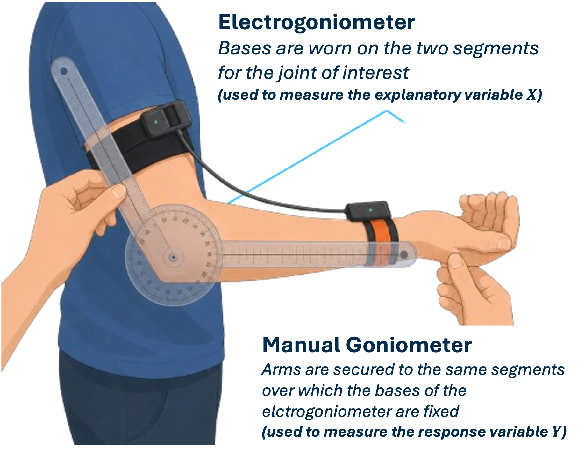
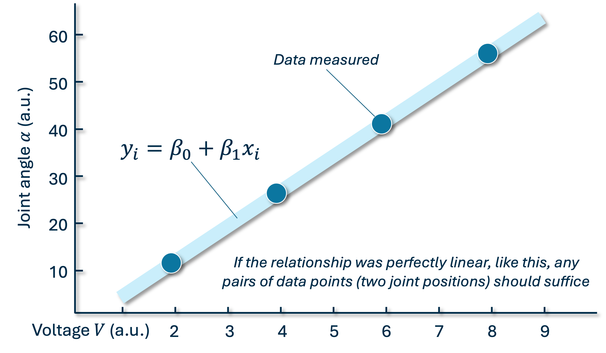
The same procedure is considered for calibrating a torque (or force sensor). Voltage readings, provided by the torque sensor, are plotted against known loads imposed by the experimenter and the model’s coefficients are computed.
Often, two data points are not sufficient for determining \(\beta_0\) and \(\beta_1\), requiring the use of linear regression.
Predicting Maximal Heart Rate (\(\text{HR}_{\max}\))
Finally, maximal heart rate (\(\text{HR}_{\max}\)) is a key parameter in sport and exercise science. Training zones, within which specific physiological adaptations are expected to occur, are often prescribed as percentages of \(\text{HR}_{\max}\). However, direct measurement of \(\text{HR}_{\max}\) is not always feasible or advisable (for example, in individuals at elevated cardiovascular risk). Consequently, accurate prediction of \(\text{HR}_{\max}\) is of considerable practical importance.
The most widely known formula for predicting maximal heart rate is
\[ \text{HR}_{\max}=220-\text{age}. \]
The dependence of \(\text{HR}_{\max}\) on age is physiologically plausible, reflecting age-related changes in cardiac function and autonomic regulation, among other mechanisms.
Gellish and colleagues [4], however, observed that \(\text{HR}_{\max}\) was more accurately described by the relationship
\[ \text{HR}_{\max}=207-0.7\times\text{age}. \]
NoteUsing \(\text{HR}_{\max}\) prediction to explain linear regression
This example will be used throughout the chapter to introduce the concepts and procedures underlying linear regression.
The Simplest Predictive Model for \(\text{HR}_{\max}\)
Individuals participating in competitive sports are typically required to undergo a medical examination before receiving clearance for competition. If the examination is successful, a medical certificate is issued stating that the individual can safely engage in intense physical activity. As part of this assessment, the individual performs an exercise test during which cardiovascular responses are monitored at progressively increasing levels of exertion.
Let us consider the example of a sports medicine physician who wishes to predict the maximal heart rate, \(\text{HR}_{\max}\), of the next individual presenting for a medical certification.
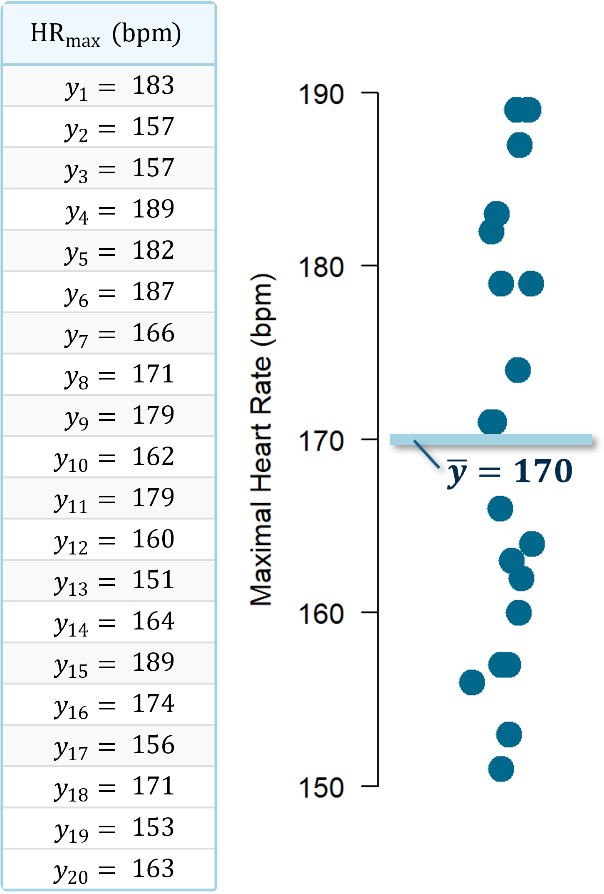
\(\text{HR}_{\max}\) is treated as a random variable,
\[ Y \sim \mathcal{N}\left(\mu,\sigma^2\right). \]
The population parameters \(\mu\) and \(\sigma\) are unknown. Consequently, the physician relies on measurements collected from a sample of \(n = 20\) individuals.
Because each observation was obtained from a different individual, the measurements may reasonably be assumed to be independent.
The simplest possible model for predicting \(\text{HR}_{\max}\) for a future individual is
\[ y_i = \mu + \varepsilon_i, \qquad \varepsilon_i \sim \mathcal{N}\left(0,\sigma^2\right). \]
Under this model, the best prediction for a future observation is the expected value of \(y_i\):
\[ \hat y_i = E(y_i) = E(\mu + \varepsilon_i) = \mu + E(\varepsilon_i) = \mu. \]
Since \(\mu\) is unknown, it is estimated from the \(n = 20\) available \(\text{HR}_\text{max}\) values in Figure 15.2:
\[ \hat{\mu} = \overline{y} = 171 \text{ bpm} \]
Therefore, the predicted maximal heart rate for the next individual is
\[ \hat y_{21} = 171 \text{ bpm}. \]
A natural question follows: How much uncertainty is associated with this prediction?
To answer this question, we consider the variance of the prediction error. The prediction combines two sources of variability:
- uncertainty in estimating the population mean \(\mu\);
- natural subject-to-subject variability represented by \(\varepsilon_i\).
Thus,
\[ \mathrm{Var}(\hat y_i) = \mathrm{Var}(\overline{y} + \varepsilon_i) = \mathrm{Var}(\overline{y}) + \mathrm{Var}(\varepsilon_i). \]
The variance of the error term is \(\sigma^2\), estimated from the sample by \(s^2\) (see Equation 12.1). The variance of the sample mean, discussed in Section 11.5.2, is estimated as \(s^2/n\).
Therefore, the variance associated with predicting a new observation is
\[ \mathrm{Var}(\hat y_i) = s^2 + \frac{s^2}{n} = \frac{n+1}{n}s^2. \]
For the \(21^\text{st}\) individual, the estimated prediction variance is
\[ \frac{21}{20}s^2 \]
Complete the exercise below to determine the prediction interval associated with \(\hat{y}_i\).
Exercise: Margin of error for \(\text{HR}_{\max}\) prediction
Figure Figure 15.1 shows the maximal heart rate (\(\text{HR}_{\max}\)) measured in a sample of \(n=20\) individuals.
Assuming that \(Y \sim \mathcal{N}(\mu,\sigma^2)\) and given:
\[ \begin{aligned} n &= 20 \\ \overline{y} &= 171.4 \text{ bpm} \\ s &= 12.6 \text{ bpm} \end{aligned} \]
Compute the 95% prediction interval for the next individual’s maximal heart rate. Enter the lower and upper limits (in bpm) rounded to one decimal place.
Lower limit:
Upper limit:
The prediction interval is
\[ \bar y \pm t_{19,0.975}\,s\sqrt{1+\frac{1}{20}}. \]
Using
\[ t_{19,0.975}=2.093, \]
gives
\[ 174.5 \pm 2.093 \times 12.3 \times \sqrt{1.05}. \]
The resulting 95% prediction interval is
\[ (144.4,\;198.4)\text{ bpm}. \]
Building an Intuition for the Importance of Linear Regression
In the exercise above, the interval within which the \(\text{HR}_{\max}\) estimate for any new individual should fall with 95% probability was disappointingly large. In the absence of further information, however, this is the best possible prediction.
It is likely that most of the variability in the \(\text{HR}_{\max}\) values reported in Figure 15.2 is explained by another variable. In linear regression, variables fall into two main categories:
- The response variable is the variable we intend to predict. It is often termed the outcome or dependent variable.
- The explanatory variable is the variable that contributes to explaining the response variable. It is also known as a regressor, predictor, or independent variable.
Given the discussion in Section 15.1.4, what would be the most likely explanatory variable for \(\text{HR}_{\max}\)
When a potential explanatory variable is identified, the first step is to assess whether it contributes to explaining the response variable. Based on the discussion in the third biomedical example above, maximal heart rate decreases with age. It is therefore reasonable to hypothesize that much of the variability in \(\text{HR}_{\max}\) reported in Figure 15.2 is due to age.
Qualitative Assessment of Our Intuition
The first approach for evaluating whether age helps explain \(\text{HR}_{\max}\) is visual inspection of the data. Scatterplots, presented in Section 10.10, are among the most useful graphical tools for qualitatively assessing relationships between variables.
Two important observations can be drawn from the scatterplot shown in Figure 15.2, obtained by plotting the response variable (\(y\) axis: \(\text{HR}_{\max}\)) against the potential explanatory variable (\(x\) axis: age).
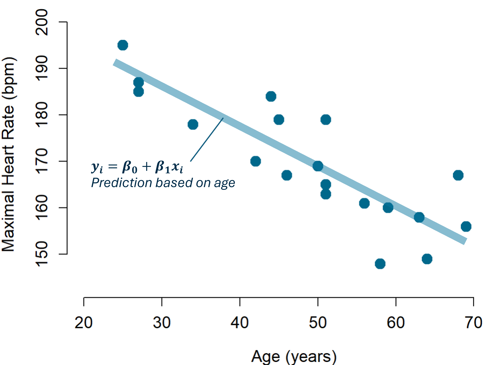
- There is an approximately linear relationship between maximal heart rate and age, with older individuals exhibiting lower \(\text{HR}_{\max}\) values.
- Within a narrow age interval, the variability of \(\text{HR}_{\max}\) appears smaller than when considering the entire age range.
Instead of predicting \(\text{HR}_{\max}\) using a single population mean value, \(y_i=\mu+\varepsilon_i\), it seems reasonable to express the population mean as a function of age. Based on Figure 15.2, this relationship may be approximated by:
\[ \mu_i = \beta_0 + \beta_1 x_i \]
where \(\mu_i\) is the mean value for the population of subjects with age \(x_i\).
The prediction model for future individuals becomes:
\[ y_i = \mu_i + \varepsilon_i = \beta_0 + \beta_1 x_i + \varepsilon_i, \qquad \varepsilon_i \sim \mathcal{N}\left(0,\sigma^2\right) \tag{15.1}\]
where \(\beta_0\) and \(\beta_1\) are the coefficients of the model, respectively the intercept and the slope of the regression line.
Before estimating the coefficients of the linear model, it is important to assess whether age is indeed associated with maximal heart rate and whether the relationship appears sufficiently linear to justify the proposed model.
NoteNon-captalized notation
The explanatory (\(x_i\): age) and response (\(y_i\): maximal heart rate) are expressed using non-captalized letters to specifically denote the observed values for the sample of individual simulated in Figure 15.2.
ImportantNormality is preserved
It is important to notice that the only source of variability is the error term \(\varepsilon_i\), assumed to be a Normal random variable with zero mean and variance \(\sigma^2\).
The assumptions of independence between observations, Normality of residuals, and homoscedasticity are preserved in the linear regression framework.
15.2 The Association Between Two Variables
Scatterplots provide immediate insight into the possible existence of a relationship between the response and explanatory variables. But what if the interest was to address questions such as:
- Is the variable \(Y\) (response) associated with the variable \(X\) (explanatory)?
- How much of the variation in \(Y\) is explained by variation in \(X\)?
Specific statistics are available for addressing these questions.
Covariance
Section 10.5 discussed measures of variability for a single random variable. Variance and its square root—the standard deviation—were among them.
Covariance extends the notion of variance to two random variables. That is, covariance measures the joint variability of two random variables. It is defined as:
\[ \begin{aligned} \text{Cov}\left(X,Y\right) = \sigma_{X,Y} &= E\left[(X-\mu_X)(Y-\mu_Y)\right] \\ &= \frac{1}{n}\sum_{i=1}^{n}\left(X_i-\mu_X\right)\left(Y_i-\mu_Y\right) \end{aligned} \tag{15.2}\]
where \(\mu_X\) and \(\mu_Y\) are the expected values of \(X\) and \(Y\), respectively.
The covariance can be conceived geometrically as the sum of the areas of rectangles (considering their sign) defined between each pair of coordinates \((X_i,Y_i)\) and their respective mean values \((\mu_X,\mu_Y)\).
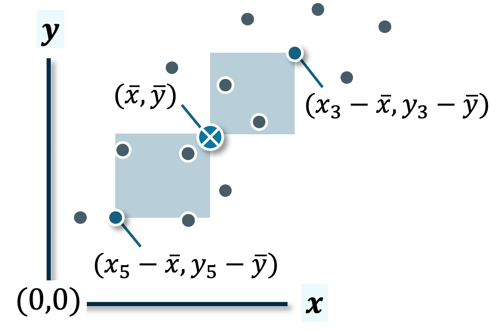
The sign of the covariance indicates whether two variables tend to increase or decrease together. Positive covariance indicates that larger values of one variable tend to be associated with larger values of the other, while negative covariance indicates the opposite.
However, as exemplified in the following exercise, covariance is not well suited for comparing the strength of relationships between different pairs of variables.
The figure below illustrates two scatterplots, considering body mass as the response variable and height (left plot) and lean body mass (right plot) as predictors.
The covariance between body mass and each predictor is shown in the plots.
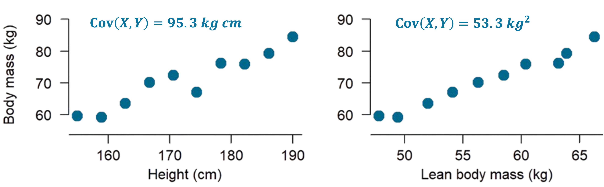
Based on the covariance values reported, is it possible to conclude that body mass is more strongly associated with height than with lean body mass?
Covariance depends on the units of measurement of both variables. Consequently, covariance values cannot be directly compared across relationships involving different predictors.
Although the covariance is larger for body mass and height than for body mass and lean body mass, this does not imply a stronger association.
In fact, the scatterplots suggest the opposite: observations are more closely aligned around a straight line in the right plot than in the left plot. A standardized measure of association is required to compare the strength of the relationships.
Correlation Coefficient
The limitations of covariance motivate the use of the Pearson correlation coefficient, which standardizes covariance by the variability of both variables.
For two jointly distributed random variables, \(X\) and \(Y\), with non-zero variances, their correlation \(\rho\) is defined by:
\[ \rho = \frac{\text{Cov}\left(X,Y\right)}{\sqrt{\text{Var}\left(X\right)\text{Var}\left(Y\right)}} \tag{15.3}\]
From this equation, it can be seen that \(\rho\) is not sensitive to linear transformations applied to either variable. That is, \(\rho\) is independent of the unit of measurement.
Further detail on the use of \(\rho\) to interpret the strength of the linear relationship between \(X\) and \(Y\) is provided in the section on the Pearson Correlation Coefficient.
The Sample Correlation Coefficient
In general, the correlation coefficient is estimated from a sample of size \(n\). Just like the sample mean and sample variance, it is a random variable.
The estimated correlation coefficient is denoted as \(r\) instead of \(\rho\), and its definition is given by Equation 10.9.
The value of \(r\) changes with the sample from which it is computed. For example, if body mass and height were measured on three different samples of \(n=10\) subjects each, each sample would yield a numerically different correlation coefficient (see Figure 15.4).
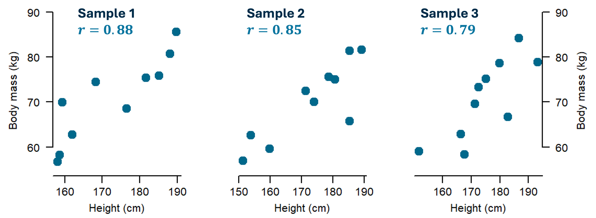
The two variables are said to be linearly correlated if their population correlation coefficient is significantly different from zero. To test this, the same logic used in previous chapters for generalizing sample results to the population is applied.
Based on the null distribution of the estimated correlation coefficient \(r\), the probability of observing an \(r\) value as extreme as that obtained is computed. If this probability is smaller than the desired significance level \(\alpha\), the conclusion is drawn that the two variables are linearly correlated.
Testing for the Significance of \(r\)
If the pair \((X,Y)\) is sampled from a bivariate Normal population and the null hypothesis \(H_0:\rho=0\) is true, then the test statistic
\[ t_r = r\sqrt{\frac{n-2}{1-r^2}} \tag{15.4}\]
follows Student’s \(t\) distribution with \(\nu=n-2\) degrees of freedom.
Equivalently, this statistic can be written as:
\[ t_r = \frac{r-\rho}{s_r} \]
where, under \(H_0:\rho=0\), the standard error associated with the estimated correlation coefficient is:
\[ s_r = \sqrt{\frac{1-r^2}{n-2}} \]
Therefore, testing for the statistical significance of \(r\) means assessing whether:
- the observed \(|t_r|\) value exceeds the critical value associated with the desired significance level \(\alpha\), or
- the \(p\)-value, given by \(P\left(t_{\nu}>|t_r|\right)\), is smaller than \(\alpha\).
NoteHypotheses for testing correlation
The hypotheses for testing the correlation coefficient are framed in terms of the population correlation coefficient \(\rho\), not the sample correlation coefficient \(r\). The sample value \(r\) is used to compute the test statistic.
Given the maximal heart rate and age data shown in Figure 15.2, what would be the null hypothesis and the alternative hypothesis for the correlation coefficient?
The null and alternative hypotheses are framed according to the population correlation coefficient \(\rho\). This leaves only two valid options to be considered.
As the scatterplot shows a negative relationship between maximal heart rate and age, the alternative hypothesis to be tested would be that \(\rho < 0\).
Significance versus Relevance of \(r\)
Given that the standard error of the estimated correlation coefficient decreases with \(n\), a small correlation may nevertheless be highly significant. For this reason, statistical significance and practical relevance should be considered separately.
Several guidelines have been proposed to classify the strength of a significant correlation coefficient. However, the interpretation of \(r\) is context dependent. When validating a testing method against a gold-standard method, for example, an \(r\) value of \(0.7\) may be deemed unacceptably low. However, an \(r\) value of \(-0.7\) may be considered sufficiently large to support a relevant linear association between maximal heart rate and age.
There are two approaches to assess the practical relevance of the sample correlation coefficient.
Coefficient of Determination \(R^2\)
When only one predictor is included in the regression model and no constraints or weights are used to estimate the coefficients of the model, the quantity
\[ R^2 = r^2 \]
indicates the proportion of variability of the response variable that is explained by the explanatory variable.
\(R^2\) is known as the coefficient of determination and is a widely used metric to express the explanatory ability of a regression model. There is no universally valid threshold above which \(R^2\) denotes a valid model. Typically, reports of \(R^2\) should be accompanied by scientifically grounded judgment about the relevance of the observed values.
NoteDefinition of \(R^2\)
The computation of \(R^2\) depends on the regression model used. The equation above illustrates the definition of the coefficient of determination for a simple linear regression model.
Later in this chapter, a more general definition of \(R^2\) will be presented.
Reframing the Test Hypotheses
Another approach for assessing the practical relevance of the sample correlation coefficient \(r\) is to frame the null and alternative hypotheses around a minimum (or maximum) relevant correlation value.
For example, there may be scientifically valid reasons to believe that \(\rho<-0.7\) indicates a physiologically relevant association between maximal heart rate and age (see Figure 15.3). In this case, a directional hypothesis may be more appropriate:
\[ H_0: \rho \ge -0.7, \qquad H_1: \rho < -0.7 \]
Testing hypotheses involving non-zero values of \(\rho\) requires accounting for the fact that the correlation coefficient is bounded between \(-1\) and \(1\).
Unbounding \(r\) with the Fisher z Transform
Before introducing the Fisher \(z\) transform, it is useful to understand why such a transformation is necessary.
Maximal heart rate and age were simulated in RStudio \(100\) times, each simulation considering a sample of \(n=30\) individuals. The population correlation coefficient was fixed at \(\rho=-0.80\), while the sample correlation coefficient \(r\) was computed for each simulated sample. The scatterplot for the first simulation, together with the histogram of the \(100\) estimated \(r\) values, is shown in Figure 15.5.
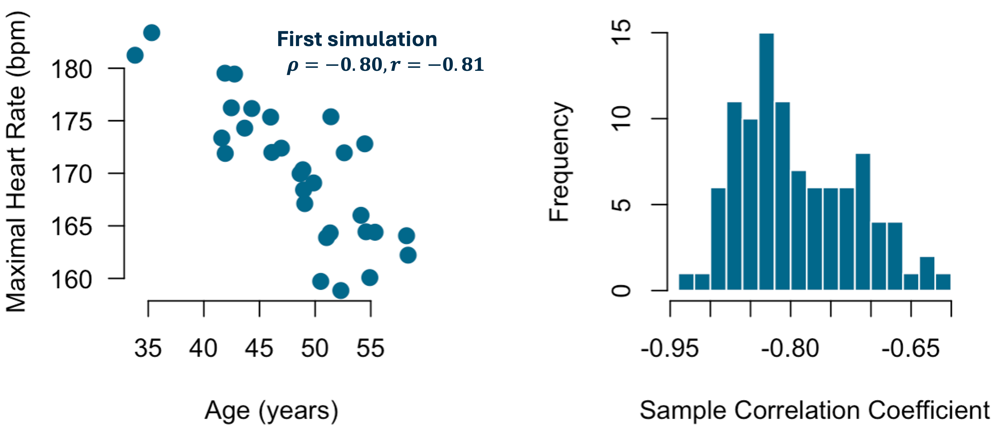
The histogram shows a positively skewed distribution for the simulated \(r\) values. This asymmetry occurs because the correlation coefficient is bounded between \(-1\) and \(1\). In this example, the population correlation coefficient is close to the lower bound (\(\rho=-0.80\)), so the sampling distribution of \(r\) is compressed toward \(-1\).
Normality can be approximately restored by applying the Fisher \(z\) transform to \(r\):
\[ z_r = \frac{1}{2}\ln\left(\frac{1+r}{1-r}\right) = \operatorname{atanh}(r) \tag{15.5}\]
If \(X\) and \(Y\) follow a bivariate Normal distribution1, with population correlation coefficient \(\rho\), and if observations are independent, then the transformed sample correlation coefficient is approximately Normally distributed:
\[ z_r \sim \mathcal{N}\left(\mu_z = z_{\rho} = \operatorname{atanh}(\rho), \sigma^2_{z_{\rho}}=\frac{1}{n-3}\right) \tag{15.6}\]
The Fisher transformation therefore removes the bounds imposed on \(r\) and allows inference on non-zero values of \(\rho\) using the Standard Normal distribution.
Applying the Fisher z Transform to the \(\text{HR}_{\max}\) Example
The goal here is to test whether the correlation coefficient associated with the data shown in Figure 15.3 is significantly smaller than \(-0.70\).
Table 15.1 lists the age and maximal heart rate data for the \(n=20\) subjects shown in Figure 15.3. Because the hypothesis involves a non-zero value of \(\rho\), the Fisher \(z\) transform is applied.
For these simulated data, inspired by Gellish et al [4], the following sample quantities are obtained:
\[ \begin{aligned} r &= -0.91 \\ z_r &= -1.528 \end{aligned} \]
where \(r\) and \(z_r\) are the sample correlation coefficient and its Fisher-transformed value, respectively.
Suppose that the association between \(\text{HR}_{\max}\) and age is considered physiologically relevant only if the population correlation is smaller than:
\[ \rho = -0.70 \]
From Equation 15.6:
\[ \begin{aligned} z_{\rho} &= \operatorname{atanh}(-0.70)=-0.867 \\ \sigma^2_{z_{\rho}} &= \frac{1}{17} = 0.059 \end{aligned} \]
The hypotheses can be written as:
\[ H_0: \rho \ge -0.70, \qquad H_1: \rho < -0.70 \]
The significance of the observed \(r\) value is tested based on the Standard Normal distribution (see Section 11.4.4).
First, we compute the \(z\)-score:
\[ z_{z_r} = \frac{z_r - z_{\rho}}{\sigma_{z_{\rho}}} = \frac{-1.528-\left(-0.867\right)}{\sqrt{0.059}} = -2.721 \]
Then, based on the alternative hypothesis \(H_1: \rho<-0.70\), we compute the \(p\)-value associated with observing a Fisher-transformed correlation coefficient smaller than that obtained:
\[ P\left(Z<z_{z_r}\right)=P\left(Z<-2.721\right) = 0.003 \]
If this probability is smaller than the chosen significance level \(\alpha\), there is evidence that the population correlation coefficient is smaller than \(-0.70\).
Based on the \(p\)-value just obtained, what would be your conclusion about the relationship between maximal heart rate and age?
The correlation between the two variables is:
The probability of observing a Fisher-transformed correlation coefficient smaller than that associated with \(\rho=-0.70\) is smaller than \(\alpha = 0.05\).
For this reason, there is evidence that the population correlation coefficient is smaller than \(-0.70\). The correlation between maximal heart rate and age is therefore significantly negative and stronger than the threshold considered physiologically relevant.
Comparing \(r\) for Independent Groups
The same approach just described to test for the significance of \(r\) could be applied to assess differences in the correlation coefficients for two independent samples.
NoteComparing Pearson \(r\) between independent groups
The Fisher \(z\) transform can also be used to test whether two correlation coefficients, estimated from independent samples, are significantly different.
If \(z_{r_1}\) and \(z_{r_2}\) are the Fisher-transformed correlation coefficients obtained from samples of sizes \(n_1\) and \(n_2\), then:
\[ z_{r_1}-z_{r_2} \sim \mathcal{N} \left(z_{\rho_1}-z_{\rho_2}, \; \frac{1}{n_1-3}+\frac{1}{n_2-3} \right) \]
The variance of the difference is therefore given by the sum of the variances associated with the two transformed correlation coefficients.
What if Spearman is More Appropriate over Pearson?
When the assumptions underlying Pearson’s correlation coefficient are not met, or when interest lies in assessing a monotonic rather than a linear relationship, Spearman’s correlation coefficient may be preferred (see Section 10.10.3).
Briefly, the Spearman correlation coefficient is based on the ranks of observations rather than on their original values. It therefore measures the strength of a monotonic relationship between variables. A relationship is monotonic when one variable tends to increase (or decrease) as the other increases, even if the relationship is not linear.
Because it relies on ranks, Spearman’s correlation coefficient is less sensitive to extreme values and does not require the assumption of a bivariate Normal distribution.
In practice, Spearman’s correlation coefficient is often preferred when:
- one or both variables are ordinal;
- there is evidence that the Normality assumption is violated;
- outliers strongly influence the Pearson correlation coefficient;
- the relationship appears monotonic but not linear.
NoteTesting the Significance of Spearman’s Correlation Coefficient
For the Spearman rank correlation coefficient, the null distribution is more complex and depends on the sample size.
Most statistical software computes the significance of Spearman’s correlation coefficient using Algorithm AS 89, proposed by Best and Roberts [5]. This algorithm provides accurate probabilities for testing whether the population Spearman correlation coefficient differs from zero.
For large samples, the distribution of Spearman’s coefficient approaches that of Pearson’s correlation coefficient, allowing accurate asymptotic approximations.
15.3 Simple Linear Regression
Linear regression is a statistical technique used to estimate the coefficients of a model describing the relationship between a response variable and one or more explanatory variables. Simple linear regression refers to the situation in which only one explanatory variable is considered.
In the previous sections, graphical and analytical methods were presented to assess the existence of a relationship between two variables. Linear regression should be applied only when there is evidence supporting a relationship between variables and when this relationship can be reasonably approximated by a linear model.
This section describes the procedural steps for computing the coefficients of the simple linear regression model.
In the biomedical field, there are mainly two applications of linear regression: predicting outcomes given an explanatory variable and calibrating instruments. Examples have been provided in Section 15.1.
Computing the Coefficients of the Model
With linear regression, the coefficients of the model providing the best fit for the experimental data are determined. The best fit is usually determined with the least-squares method.
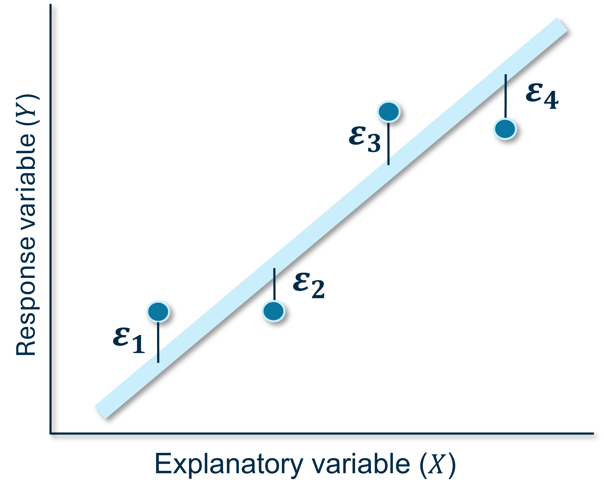
Consider, for example, the non-collinear data points shown in this figure, from which a clear linear relationship between the two variables \(Y\) and \(X\) can be appreciated. Different lines could be adjusted to capture the relationship between \(Y\) and \(X\). With the least-squares method, the best line is the one minimizing the sum of squared residuals.
At this stage, \(\beta_0\) and \(\beta_1\) are treated as the coefficients defining the best-fitting linear relationship for the available variables \(X\) and \(Y\). The fact that, in practice, these coefficients are estimated from a finite sample will be considered in Section 15.3.2.
There are two main procedures for computing the coefficients of the model: using the standard notation or the matrix notation.
Computing Coefficients Using the Standard Notation
Let us define the error function \(e\):
\[ e = \sum_{i=1}^N \varepsilon_i^2 =\sum_{i=1}^N \left(Y_i - \beta_0 - \beta_1 X_i \right)^2 \]
where \(X_i\) and \(Y_i\) are the observed values for the explanatory and response variables, respectively.
The coefficients \(\beta_0\) and \(\beta_1\) can be computed by minimizing \(e\), setting its partial derivatives to zero:
\[ \min e \Rightarrow \frac{\partial e}{\partial \beta_0} = \frac{\partial e}{\partial \beta_1} = 0 \]
This leads into a system of two equations with two unknowns (\(\beta_0\) and \(\beta_1\)). Solving the system yields:
\[ \begin{aligned} \beta_0 &= \frac{1}{\Delta} \left[ \left(\sum_{i=1}^{N} X_i^2\right) \left(\sum_{i=1}^{N} Y_i\right) - \left(\sum_{i=1}^{N} X_i\right) \left(\sum_{i=1}^{N} X_iY_i\right) \right] \\ \beta_1 &= \frac{1}{\Delta} \left[ N\sum_{i=1}^{N} X_iY_i - \left(\sum_{i=1}^{N} X_i\right) \left(\sum_{i=1}^{N} Y_i\right) \right] \\ \Delta &= N\sum_{i=1}^{N} X_i^2 - \left(\sum_{i=1}^{N} X_i\right)^2 \end{aligned} \tag{15.7}\]
ImportantA more useful expression for the model’s coefficients
As will become evident later in this chapter, the coefficients of the linear model may be computed using a more useful expression:
\[ \begin{aligned} \beta_0 &= \overline{Y}-\beta_1 \overline{X} \\ \beta_1 &= \frac{\sum_{i=1}^n \left(X_i-\overline{X}\right)\left(Y_i-\overline{Y}\right)}{\sum_{i=1}^n\left(X_i-\overline{X}\right)^2} \end{aligned} \tag{15.8}\]
where \(\overline{X}\) and \(\overline{Y}\) are the mean values for the explanatory and response variables, respectively.
The numerator of \(\hat{\beta}_1\) is proportional to the covariance between \(X\) and \(Y\), while the denominator is proportional to the variance of \(X\). Therefore, the slope of the regression line depends on how strongly \(X\) and \(Y\) vary together relative to the variability of \(X\).
Computing Coefficients Using the Matrix Notation
With matrix notation, the linear regression procedure can be written more compactly. The procedure for computing the coefficients of the model using matrix notation is provided below.
Observations for the response and the explanatory variables can be written as:
\[ \begin{aligned} Y_1 &= \beta_0 + \beta_1 X_1 + \varepsilon_1 \\ &\vdots \\ Y_N &= \beta_0 + \beta_1 X_N + \varepsilon_N \end{aligned} \]
This system of equations can be represented using matrix notation as:
\[ \mathbf{Y}=\mathbf{X}\mathbf{D}+\boldsymbol{\varepsilon}, \]
where
\[ \mathbf{Y} = \begin{pmatrix} Y_1 \\ Y_2 \\ \vdots \\ Y_N \end{pmatrix}, \quad \mathbf{X} = \begin{pmatrix} 1 & X_1 \\ 1 & X_2 \\ \vdots & \vdots \\ 1 & X_N \end{pmatrix}, \quad \mathbf{D} = \begin{pmatrix} \beta_0 \\ \beta_1 \end{pmatrix}, \quad \boldsymbol{\varepsilon} = \begin{pmatrix} \varepsilon_1 \\ \varepsilon_2 \\ \vdots \\ \varepsilon_N \end{pmatrix}. \]
Interest lies in estimating the vector \(\mathbf{D}\). Since \(\mathbf{X}\) is not square, it is not directly invertible. The least-squares solution is obtained by minimizing:
\[ \boldsymbol{\varepsilon}^{T}\boldsymbol{\varepsilon} = \left(\mathbf{Y}-\mathbf{X}\mathbf{D}\right)^T \left(\mathbf{Y}-\mathbf{X}\mathbf{D}\right) \]
Taking the derivative with respect to \(\mathbf{D}\) and setting it to zero gives the normal equations:
\[ \mathbf{X}^T\mathbf{Y}=\mathbf{X}^T\mathbf{X}\mathbf{D} \]
Premultiplying both sides by \(\left(\mathbf{X}^T\mathbf{X}\right)^{-1}\) gives:
\[ \left(\mathbf{X}^T\mathbf{X}\right)^{-1}\mathbf{X}^T\mathbf{Y} = \left(\mathbf{X}^T\mathbf{X}\right)^{-1}\mathbf{X}^T\mathbf{X}\mathbf{D} \]
As a result:
\[ \mathbf{D} = \left(\mathbf{X}^T\mathbf{X}\right)^{-1}\mathbf{X}^T\mathbf{Y} \tag{15.9}\]
ImportantThe design matrix \(\mathbf{X}\)
The matrix \(\mathbf{X}\) is often known as the design matrix, because its structure scales with the experimental design. That is, the number of:
- rows of \(\mathbf{X}\) depends on how many observations are collected;
- columns of \(\mathbf{X}\) depends on how many predictors are considered in the model.
Estimating the Coefficients of the Model
In general, the regression line is fitted to observations collected from a sample of \(n\) individuals. This means the population coefficients \(\beta_0\) and \(\beta_1\) are estimated from the available data. Both estimates are therefore random variables.
To illustrate this concept, as well as the procedure to test for the significance of the coefficient estimates, let us consider the maximal heart rate (\(\text{HR}_{\max}\)) and age data reported in Figure 15.2 (see Section 15.1.4).
Figure 15.6 illustrates \(\text{HR}_{\max}\) and age data simulated for three different samples, each with \(n=20\) subjects. For each of these three samples, the procedure illustrated in the previous section yields different values for the estimates \(\hat{\beta}_0\) and \(\hat{\beta}_1\).
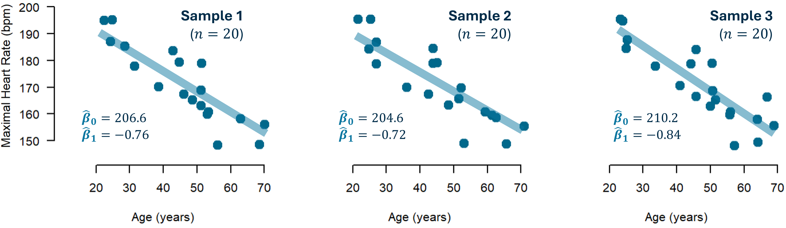
Testing for the Significance of \(\hat{\beta}_0\) and \(\hat{\beta}_1\) with ANOVA
Based on the arguments just discussed, \(\hat{\beta}_0\) and \(\hat{\beta}_1\) are sample statistics. Their values change when calculated for repeated samples of (\(x_i\): explanatory variable, \(y_i\): response variable) pairs drawn from the target population.
The significance of \(\hat{\beta}_0\) and \(\hat{\beta}_1\) will be assessed with the Analysis of Variance procedure, illustrated in the previous chapter (see Chapter 14).
Clarifying some notation and assumptions is helpful to understand the ANOVA procedure applied to test for the significance of regression coefficients.
Terminology and Assumptions
When computing the coefficients of the model using regression analysis, it is common to say that we are regressing \(Y\) on \(X\). The fitted line is termed the regression line. Using the least-squares approach to compute the coefficients of the model and ANOVA to test for their significance implies the following assumptions:
- the explanatory variable \(X\) is assumed to be measured without error. In the classical linear regression framework, inference is conditional on the observed values of \(X\).
- the errors \(\varepsilon_i\) are mutually independent random variables:\(\varepsilon_i \sim \mathcal{N}\left(0,\sigma^2\right)\)
- the variance \(\sigma^2\) is constant across the range of \(X\).
- observations \(Y_i\) of the response variable are independently distributed:
\[ Y_i \sim \mathcal{N}\left(\beta_0+\beta_1 X_i,\sigma^2\right) \]
The error term \(\varepsilon_i\) is commonly denoted as the departure of the response variable \(Y_i\) from its prediction \(\beta_0 + \beta_1 X_i\).
The Sum of Squares
ANOVA is based on partitioning the total sum of squares into terms corresponding to different sources of variability. In simple linear regression, the total sum of squares \(SS_\text{tot}\) is partitioned into:
\[ SS_\text{tot} = SS_\text{R} + SS_\text{E} \tag{15.10}\]
The tabset below defines and graphically illustrates each of the sums of squares in Equation 15.10.
ImportantImportant shorthand notations
Before defining the sums of squares used to assess the significance of the regression model with ANOVA, it is helpful to define the following shorthand notation:
\[ \begin{aligned} S_{xx} &= \sum_{i=1}^n\left(x_i-\overline{x}\right)^2 \\ S_{yy} &= \sum_{i=1}^n\left(y_i-\overline{y}\right)^2 \\ S_{xy} &= \sum_{i=1}^n\left(x_i-\overline{x}\right)\left(y_i-\overline{y}\right) \end{aligned} \tag{15.11}\]
where \(S_{xx}\) and \(S_{yy}\) respectively denote the sums of squares for the explanatory and response variables with respect to their means. \(S_{xy}\) is the sum of the products of deviations from the means for the two variables.
Based on this notation, the estimate of \(\beta_1\) (see Equation 15.8) can be written as:
\[ \hat{\beta}_1 =\frac{\sum_{i=1}^n\left(x_i-\overline{x}\right)\left(y_i-\overline{y}\right)} {\sum_{i=1}^n\left(x_i-\overline{x}\right)^2} =\frac{S_{xy}}{S_{xx}} \tag{15.12}\]
Based on these notations, the fitted regression model can be expressed as:
\[ \hat{y}_i =\hat{\beta}_0 + \hat{\beta}_1x_i =\overline{y} + \hat{\beta}_1\left(x_i-\overline{x}\right) =\overline{y} + \frac{S_{xy}}{S_{xx}}\left(x_i-\overline{x}\right) \tag{15.13}\]
This expression shows that the fitted regression line always passes through the point \((\overline{x},\overline{y})\).
In the absence of information on \(X\):
\[ y_i = \mu + \varepsilon_i, \quad i = 1,\dots,n \]
The residuals are therefore defined by \(\varepsilon_i=y_i-\overline{y}\), yielding the total sum of squares:
\[ SS_{\text{tot}} = \sum_{i=1}^n \left(y_{i}-\overline{y}\right)^2 \]
Based on the shorthand notations above:
\[ SS_\text{tot} = S_{yy} \]
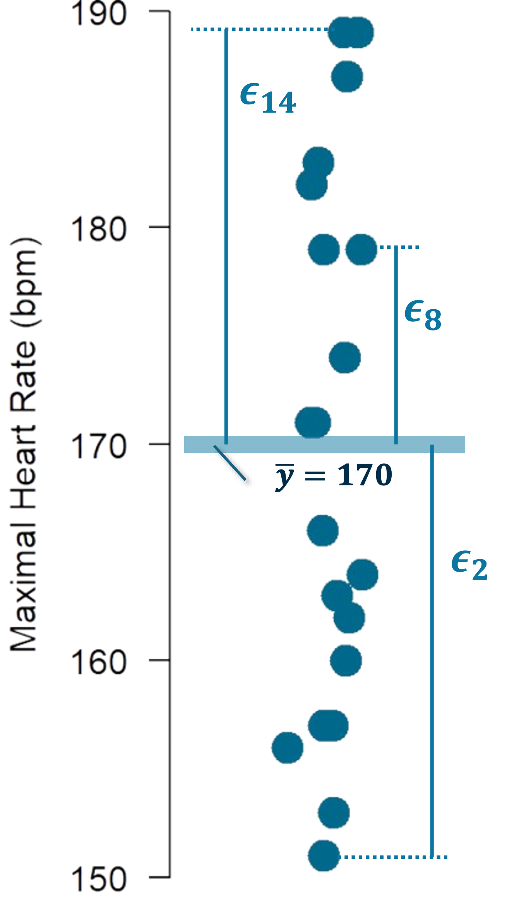
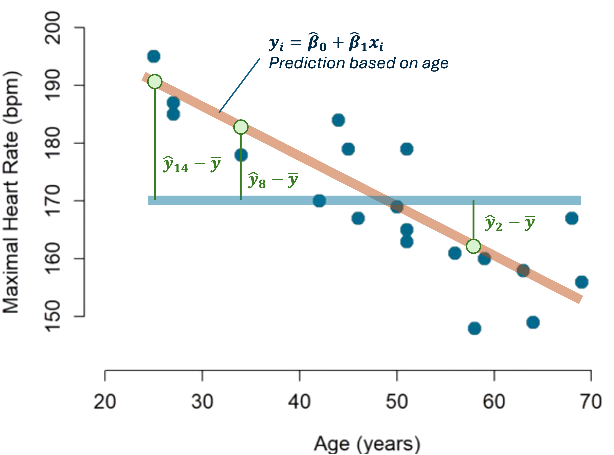
This is the regression sum of squares, given by the squared departures of the fitted values from the sample mean:
\[ SS_\text{R} = \sum_{i=1}^n \left(\hat{y}_i-\overline{y}\right)^2 \]
Considering the shorthand notations in Equation 15.11 and Equation 15.13:
\[ \begin{aligned} SS_\text{R} &=\sum_{i=1}^n\left[\frac{S_{xy}}{S_{xx}}\left(x_i-\overline{x}\right)\right]^2 \\ &=\frac{S_{xy}^2}{S_{xx}^2}\sum_{i=1}^n\left(x_i-\overline{x}\right)^2 \\ &=\frac{S_{xy}^2}{S_{xx}} \end{aligned} \]
Thus,
\[ SS_\text{R} = \frac{S_{xy}^2}{S_{xx}} = SS_\text{tot}-SS_\text{E} \]
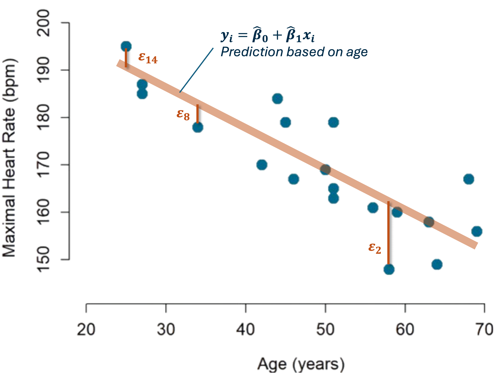
This is the residual sum of squares, given by the difference between individual observations \(y_i\) and model predictions \(\hat{y}_i\):
\[ SS_\text{E} = \sum_{i=1}^n \left(y_i-\hat{y}_i\right)^2 \]
A key observation emerging from the exercise above is that the residual sum of squares is always smaller than or equal to the total sum of squares. Even when the explanatory variable is unrelated to the response variable, the fitting procedure may still reduce the residual variability to some extent.
The critical question is therefore whether the reduction in variability produced by the regression model is larger than would be expected by chance. This is assessed with inferential statistics.
Based on the sum of squares identity, on the shorthand notations, and given the definition just presented for the sum of squares of residuals:
\[ SS_\text{E} =\sum_{i=1}^n \left(y_i-\hat{y}_i\right)^2 =\sum_{i=1}^n\left[y_i-\overline{y}-\frac{S_{xy}}{S_{xx}}\left(x_i-\overline{x}\right)\right]^2 \]
It follows that:
\[ SS_\text{E} = S_{yy} - \frac{S_{xy}^2}{S_{xx}}=SS_\text{tot}-SS_\text{R} \]
What therefore can be said about \(SS_\text{E}\) and \(SS_\text{tot}\)?
Given the regression sum of squares is non-negative:
\[ \frac{S_{xy}^2}{S_{xx}}\ge 0 \]
the residual sum of squares cannot be greater than the total sum of squares:
\[ SS_\text{E}\le SS_\text{tot} \]
When the explanatory variable contributes to explaining the response variable, \(SS_\text{R}>0\) and therefore:
\[ SS_\text{E}<SS_\text{tot} \]
The ANOVA Table for Simple Linear Regression
The previous chapter was devoted to explaining how to use Analysis of Variance for statistical inference. The method was illustrated for different experimental designs and for both parametric and non-parametric approaches.
Here, the inferential approach is illustrated assuming that knowledge from the previous chapter is available. Should this not be the case, the interested reader is referred to Chapter 14.
Inference follows from Fisher’s \(F\) test statistic, computed as the ratio between mean squares. The relevant quantities are typically reported in a table known as the ANOVA table. Examples of ANOVA tables were provided for one-way (Figure 14.4) and two-way designs (Figure 14.14).
The table below illustrates the ANOVA table created for simple linear regression, based on the \(\text{HR}_{\max}\) and age simulated data reported in Table 15.1.
Under the null hypothesis that age does not contribute to explaining \(\text{HR}_{\max}\), the \(F\) statistic should be approximately equal to one. In this case, both the regression mean square and the residual mean square estimate the variance of the error term (\(\varepsilon_i\) in Equation 15.1).
If, however, there is a significant linear relationship between the two variables, the regression sum of squares \(SS_\text{R}\) includes a systematic component associated with the explanatory variable and is therefore expected to be larger than \(SS_\text{E}\).
With the \(F\) test statistic, we assess whether the regression mean square is greater than the residual mean square by chance or because of a systematic effect of age.
The \(f\) value reported in Table 15.2 is remarkably large. From the interactive plot in the previous chapter, it is clear that:
\[ P\left(F_{\nu_n = 1, \nu_d = 18} > f = 92.3\right) \ll \alpha=0.05 \]
where \(\nu_n\) and \(\nu_d\) are the degrees of freedom associated with the numerator and denominator of the \(F\) ratio, respectively.
Assessing the Quality of the Model with \(R^2\)
The \(F\) test statistic indicates whether there is evidence of a linear relationship between the response and explanatory variables, but it does not indicate how well the model represents the observed data. For example, there could be a highly significant regression model, with a large \(F\) value, while observations remain widely scattered around the fitted line.
Three cases of statistically significant regression models are illustrated in Figure 15.7. These plots were created from simulations in R to illustrate that a significant systematic effect does not necessarily correspond to a high-quality fit.
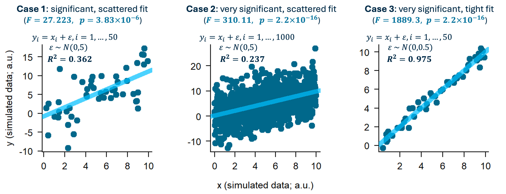
ImportantReporting significance and quality of the model
It is therefore necessary to assess and report whether a significant linear model also provides a high-quality representation of the observed data.
One important metric for quantifying the quality of the fitting procedure is the coefficient of determination \(R^2\), introduced in Section 15.2.2.3. In that section, it was defined as the square of the Pearson correlation coefficient \(r\).
Here, the coefficient of determination is defined as the ratio between the regression sum of squares and the total sum of squares:
\[ R^2 = \frac{SS_\text{R}}{SS_\text{tot}} \tag{15.14}\]
\(R^2\) represents the proportion of the total sum of squares explained by the regression model. Thus, the larger the coefficient of determination is, the better the linear fit explains the observed data (cf. \(R^2\) values in Figure 15.7).
For a simple linear regression model, Equation 15.14 provides a definition equivalent to the square of the Pearson correlation coefficient, since:
\[ \frac{SS_\text{R}}{SS_\text{tot}} =\frac{S_{xy}^2}{S_{xx}S_{yy}} =\frac{\left[\sum_{i=1}^n\left(x_i-\overline{x}\right)\left(y_i-\overline{y}\right)\right]^2}{\sum_{i=1}^n \left(x_i-\overline{x}\right)^2 \sum_{i=1}^n\left(y_i-\overline{y}\right)^2} \]
NoteCoefficient of determination for the \(\text{HR}_{\max}\times\)age model
Based on the data reported in Table 15.2, the coefficient of determination for the \(\text{HR}_{\max}\times\)age model is:
\[ R^2 = \frac{2537.7}{3033} = 0.837 \]
About \(84\%\) of the variance in \(\text{HR}_{\max}\) is explained by age, providing evidence for a high-quality fit.
Assessing the Significance of the Model from \(\beta_1\)
The parameter \(\beta_1\) is of particular interest in simple linear regression because it quantifies the expected change in the response variable \(Y\) for a one-unit increase in the explanatory variable \(X\).
\(\beta_1\) is a population parameter, while \(\hat{\beta}_1\) is its sample estimate.
Considering the example above (Figure 15.3), if age contributes to predicting maximal heart rate, then it seems plausible that \(\beta_1\) should be different from \(0\).
To test whether \(\beta_1\) is different from \(0\), it is necessary to know the sampling distribution of \(\hat{\beta}_1\).
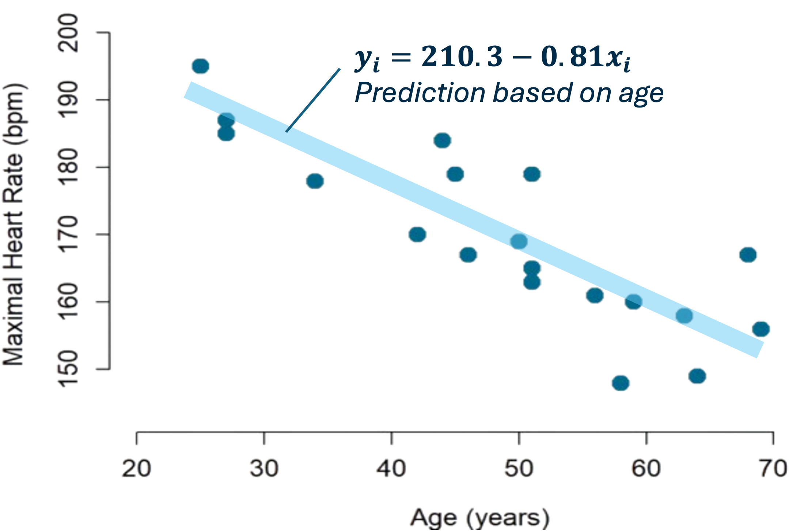
From the simulated \(\text{HR}_{\max}\) and age data, it was found that:
\[ \begin{aligned} \hat{\beta}_1 &= -0.81 \text{ bpm/year} \\ \hat{\beta}_0 &= 210.3 \text{ bpm} \end{aligned} \]
Mean and Variance of \(\hat{\beta}_1\)
From Equation 15.12, it can be noticed that \(\hat{\beta}_1\) is a linear combination of Normally distributed random variables \(Y_i\), since the explanatory variable \(X\) is assumed to be fixed and measured without error. The sampling distribution of \(\hat{\beta}_1\) is therefore Normal.
Its mean and variance are:
\[ \begin{aligned} E\left(\hat{\beta}_1\right) &= \beta_1 \\ \text{Var}\left(\hat{\beta}_1\right) &= \frac{\sigma^2}{\sum_{i=1}^n \left(x_i-\overline{x}\right)^2}=\frac{\sigma^2}{S_{xx}} \end{aligned} \tag{15.15}\]
The population variance \(\sigma^2\) can be estimated from the residual mean square:
\[ \sigma^2 \approx s^2 = MS_\text{E} = \frac{SS_\text{E}}{n-2} \]
Under the null hypothesis \(H_0: \beta_1=0\), the test statistic:
\[ t=\frac{\hat{\beta}_1 - \beta_1} {\sqrt{\widehat{\text{Var}}\left(\hat{\beta}_1\right)}} =\frac{\hat{\beta}_1 - 0} {\sqrt{MS_\text{E}/S_{xx}}} \tag{15.16}\]
follows Student’s \(t\) distribution with \(\nu=n-2\) degrees of freedom.
Guided Exercise
Given the following quantities computed from the data reported in Table 15.1:
\[ \begin{aligned} S_{xx} &= \sum_{i=1}^n \left(x_i-\overline{x}\right)^2 = 3837.75\\ s^2 &= MS_\text{E} = \frac{SS_\text{E}}{n-2} = 27.5 \end{aligned} \]
Compute the \(t\) value for \(\hat{\beta}_1\) and draw your conclusion about rejection of the null hypothesis in favor of the alternative hypothesis \(H_1:\beta_1 \ne 0\).
The \(t\) value is:
The conclusion is to:
The \(t\) value is computed according to Equation 15.16:
\[ t = \frac{-0.813}{0.085} = -9.603 \]
Given the alternative hypothesis, the probability of observing a \(t\) value as extreme as that observed is:
\[ 2\times P\left(t_{\nu=18}>|t|=9.603\right) = 1.66e-08 \]
Being smaller than a plausible \(\alpha = 0.05\), the conclusion is that \(H_0: \beta_1=0\) should be rejected.
Predicting Responses with Simple Linear Regression
After verifying the statistical significance and quality of the model, the model may be used to predict responses. Two cases should be distinguished, each with its associated prediction error.
Depending on the interest, either the mean response or the individual response may be predicted. Mathematically, the two predictions are centered on the same fitted value. Conceptually, however, their meaning and associated uncertainty differ.
Predicting an Average Response
Prediction of the mean response \(\hat{\mu}_{x_0}\) corresponds to the expected value of the response variable for individuals with a given value \(x_0\) of the explanatory variable.
Given the fitted regression model, the predicted mean response is:
\[ \hat{\mu}_{x_0} =\hat{\beta}_0+\hat{\beta}_1x_0 =\overline{y}+\hat{\beta}_1\left(x_0-\overline{x}\right) \]
The variance of the predicted mean response is:
\[ \text{Var}\left(\hat{\mu}_{x_0}\right) =\text{Var}\left(\overline{y}\right) +\left(x_0-\overline{x}\right)^2\text{Var}\left(\hat{\beta}_1\right) \]
The variance of \(\hat{\beta}_1\) is defined in Equation 15.15, while the variance of \(\overline{y}\) follows from the simple linear regression model (Equation 15.1):
\[ \text{Var}\left(\overline{y}\right) = \frac{\sigma^2}{n} \]
Therefore, the variance of the mean response for the value \(x_0\) of the explanatory variable is:
\[ \text{Var}\left(\hat{\mu}_{x_0}\right) =\frac{\sigma^2}{n}+\frac{\sigma^2}{S_{xx}}\left(x_0-\overline{x}\right)^2 =\sigma^2\left[\frac{1}{n}+\frac{\left(x_0-\overline{x}\right)^2}{S_{xx}}\right] \]
Replacing the population variance \(\sigma^2\) with the estimated variance \(s^2=MS_\text{E}\), the standard error of the average response is:
\[ s_{\hat{\mu}_{x_0}} =\sqrt{MS_\text{E}\left[\frac{1}{n}+\frac{\left(x_0-\overline{x}\right)^2}{S_{xx}}\right]} \tag{15.17}\]
Predicting the Individual Response
Prediction of the individual response \(\hat{y}_{x_0}\) corresponds to the response expected for a single individual with explanatory variable value \(x_0\).
The predicted value is centered on the same fitted value used for the mean response:
\[ \hat{y}_{x_0}=\overline{y}+\hat{\beta}_1\left(x_0-\overline{x}\right) \]
The variance of the individual prediction is larger because the variance of the error term \(\varepsilon_i\) (see Equation 15.1) must also be included:
\[ \text{Var}\left(\hat{y}_{x_0}\right) =\text{Var}\left(\hat{\mu}_{x_0}\right) +\text{Var}\left(\varepsilon_i\right) \]
Therefore, the variance of the individual response for \(x_0\) is:
\[ \text{Var}\left(\hat{y}_{x_0}\right) =\frac{\sigma^2}{n}+\frac{\sigma^2}{S_{xx}}\left(x_0-\overline{x}\right)^2 +\sigma^2 =\sigma^2\left[1+\frac{1}{n}+\frac{\left(x_0-\overline{x}\right)^2}{S_{xx}}\right] \]
Replacing the population variance \(\sigma^2\) with the estimated variance \(s^2=MS_\text{E}\), the standard error of the individual response is:
\[ s_{\hat{y}_{x_0}} =\sqrt{MS_\text{E}\left[1+\frac{1}{n}+\frac{\left(x_0-\overline{x}\right)^2}{S_{xx}}\right]} \tag{15.18}\]
Inspecting Mean and Individual Predictions
A critical observation emerging from the prediction errors described above is their dependence on the value \(x_0\) of the explanatory variable where the prediction is required. Most importantly, the variance associated with both the mean and individual responses increases with the square of the difference between \(x_0\) and the mean value \(\overline{x}\) used for fitting the model.
To illustrate the dependence of the prediction error on the explanatory variable, let us consider predictions for the example data shown in Figure 15.8.
Figure 15.9 illustrates the 95% intervals computed for both the mean (left plot) and individual (right plot) responses predicted over the range sampled for the explanatory variable. Intervals were computed based on Equation 15.18 (individual response) and Equation 15.17 (mean response). The limits of the intervals defined by the light blue areas in Figure 15.9 were computed as:
\[ \begin{aligned} \hat{\mu}_{x_0} &\pm t_{1-\frac{\alpha}{2},\nu=n-2} s_{\hat{\mu}_{x_0}} \\ &\text{mean response} \end{aligned} \]
\[ \begin{aligned} &\hat{y}_{x_0} \pm t_{1-\frac{\alpha}{2},\nu=n-2} s_{\hat{y}_{x_0}} \\ &\text{individual response} \end{aligned} \]
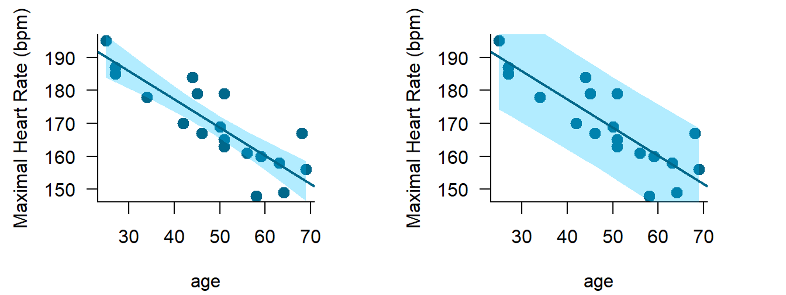
Inspection of the figure above reveals that the interval becomes wider for predictions associated with values of the explanatory variable far from the mean value. Also, the difference in prediction error between mean and individual responses is evident, with the former resulting in a narrower interval.
15.4 Multiple Linear Regression
With Simple Linear Regression, predictions of the response variable are based on a single explanatory variable. With Multiple Linear Regression, predictions are based on two or more explanatory variables.
Multiple regression may be motivated by a priori assumptions about the phenomenon under study or by the a posteriori observation that a substantial fraction of the variability in the response variable remains unexplained by the predictors currently considered.
To illustrate the multiple linear regression procedure, the anaerobic power example briefly introduced in Section 15.1 will be considered.
Example Data: Anaerobic Power
Anaerobic power refers to the power produced during high-intensity physical activity performed over a short duration. Most of the ATP2 required during such activities is supplied by anaerobic metabolic pathways, as energy transfer through oxygen-dependent (aerobic) metabolism is intrinsically slower.
Anaerobic power is therefore informative of an individual’s capacity to perform explosive tasks such as sprinting, jumping, and rapid changes of direction.
Most often, lower-limb anaerobic power is assessed using vertical-jump tests. Several regression equations have been proposed for this purpose. Here, data simulated from the study of Sayers and colleagues [1] are used to illustrate the procedural steps involved in multiple regression and their practical relevance.
Suppose you were asked to develop a method to predict anaerobic power from a simple field test. Based on the intuition that subjects jumping higher tend to produce larger anaerobic power, you then decide to regress power measured with a reference system against jump height. You then collect data from 20 subjects and obtain the model shown in the figure below.
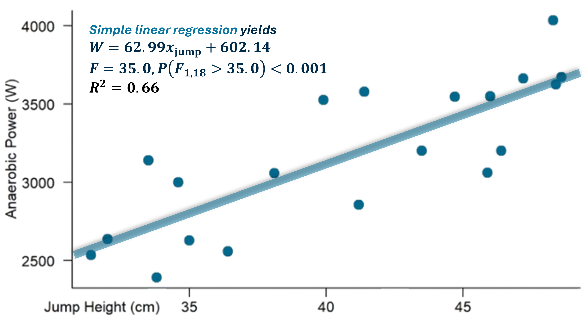
Although the model explains a substantial proportion of the variability in anaerobic power (\(R^2=0.66\)), a considerable amount of variability remains unexplained.
Which variable from the list below would be the most plausible additional predictor for improving the regression model?
The height reached during a vertical jump depends primarily on the vertical velocity of the body at takeoff. Consequently, jump height provides indirect information about the mechanical work and power generated during the movement.
However, two individuals may reach the same jump height while producing different amounts of power. The main reason is that the body mass being accelerated may differ substantially between individuals.
Anaerobic power depends not only on how fast the body is projected upward, but also on the amount of mass that must be accelerated. Therefore, body mass provides additional information that is not fully captured by jump height alone.
For this reason, body mass is the most plausible additional predictor for improving the regression model.
The Multiple Regression Model
With two or more explanatory variables, the regression model becomes a natural extension of the simple linear regression model:
\[ Y_i = \beta_0 + \beta_1X_{i1} + \cdots + \beta_pX_{ip} + \varepsilon_i, \qquad \varepsilon_i \sim \mathcal{N}(0,\sigma^2) \tag{15.19}\]
In multiple regression, there are \(p\ge2\) explanatory variables \((X_1,\dots,X_p)\) and therefore \(p+1\) coefficients, including the intercept \(\beta_0\).
NoteInterpretation of the coefficients
The coefficient \(\beta_j\) quantifies the expected change in the response variable associated with a one-unit increase in predictor \(X_j\), while keeping all other predictors fixed.
Estimating the Coefficients of the Model
The coefficients \(\beta_0,\beta_1,\dots,\beta_p\) are estimated by minimizing the sum of squared residuals:
\[ S(\beta) = \sum_{i=1}^{N} \left( Y_i-\hat{Y}_i \right)^2 \]
Using the least-squares method, minimization of \(S(\beta)\) is achieved by setting the partial derivatives with respect to each coefficient equal to zero:
\[ \frac{\partial S(\beta)} {\partial\beta_j} = 0, \qquad j=0,\dots,p \]
In matrix notation, the solution to the system is identical to that presented in Section 15.3.1.2. The main differences are the structure of the design matrix \(\mathbf X\) and the coefficient vector \(\hat{\mathbf B}\):
\[ \mathbf y = \begin{pmatrix} y_1\\ y_2\\ \vdots\\ y_n \end{pmatrix}, \qquad \mathbf X = \begin{pmatrix} 1 & x_{11} & \dots & x_{1p}\\ 1 & x_{21} & \dots & x_{2p}\\ \vdots & \vdots & \vdots & \vdots\\ 1 & x_{n1} & \dots & x_{np} \end{pmatrix}, \qquad \hat{\mathbf B} = \begin{pmatrix} \hat{\beta}_0\\ \hat{\beta}_1\\ \vdots\\ \hat{\beta}_p \end{pmatrix}. \]
The design matrix now contains observations for all \(p\) explanatory variables, while the coefficient vector includes the estimates of the \(p+1\) coefficients of the model.
Applying the same least-squares procedure described for simple linear regression yields:
\[ \hat{\mathbf B}=(\mathbf X^T\mathbf X)^{-1}\mathbf X^T\mathbf y \tag{15.20}\]
The matrix notation highlights the generality of the regression procedure. Regardless of how many explanatory variables are included in the model, estimation of the coefficients always follows the same matrix expression. The only difference lies in the dimensions of the design matrix \(\mathbf X\) and of the coefficient vector \(\hat{\mathbf B}\).
Testing for the Significance of the Model with ANOVA
Like for the simple linear regression model, the overall significance of a multiple regression model may be assessed using ANOVA. To this end, the total sum of squares is partitioned into the regression sum of squares and the residual sum of squares.
The Sum of Squares
For the multiple regression model, the matrix notation greatly simplifies the computation of the sums of squares.
\[ \begin{aligned} SS_\text{tot} &= \sum_{i=1}^{n} \left(y_i-\overline{y}\right)^2 = \mathbf y^T\mathbf y -n\overline{y}^{\,2} \\[0.3cm] SS_\text{E} &= \sum_{i=1}^{n} \left(y_i-\hat{y}_i\right)^2 = \mathbf y^T\mathbf y - \hat{\mathbf B}^{\,T}\mathbf X^T \mathbf y\\[0.3cm] SS_\text{R} &= \sum_{i=1}^{n} \left(\hat{y}_i-\overline{y}\right)^2 = \hat{\mathbf B}^{\,T} \mathbf X^T \mathbf y - n\overline{y}^{\,2} \end{aligned} \]
The total variability of the response variable is therefore partitioned as:
\[ SS_\text{tot} = SS_\text{R} + SS_\text{E} \]
If none of the explanatory variables contributes to explaining the variability of the response variable, the null hypothesis is:
\[ H_0: \beta_1=\beta_2=\cdots=\beta_p=0 \]
The alternative hypothesis is:
\[ H_1: \text{at least one } \beta_i \neq 0, \qquad i=1,\dots,p \]
NoteOverall significance of the model
The ANOVA \(F\) test assesses whether the explanatory variables, taken together, contribute significantly to explaining the variability of the response variable.
It does not identify which predictors are significant. This requires testing the individual coefficients of the model.
The ANOVA Table for Multiple Linear Regression
Table 15.3 provides a template for the creation of ANOVA tables for multiple regression analysis.
The Fisher \(F\) test statistic is computed from the regression mean square (\(MS_\text{R}\)) and the residual mean square (\(MS_\text{E}\)). As shown in the table above, both quantities are determined by dividing the respective sums of squares by their degrees of freedom.
Exercise: Testing the Significance of Anaerobic Power Prediction
In the following exercise, readers will be asked to complete the ANOVA table specific for the anaerobic power example (see Section 15.4.1). The table is partially completed from simulated data reported in Table 15.4.
Figure 15.10 shows the multiple regression model adjusted to the anaerobic power values (response variable: \(\text{Power}\)) based on the two explanatory variables—jump height (\(x_\text{jheight}\)) and body mass (\(x_\text{bmass}\)).
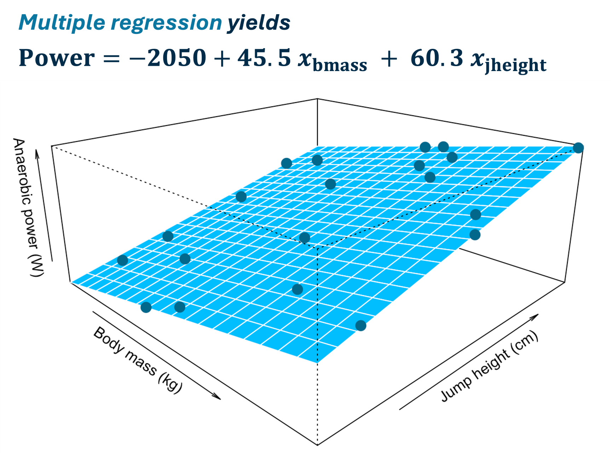
Given the data reported in Table 15.4, complete the ANOVA table below and draw your conclusion.
| Source | Degrees of Freedom | Sum of Squares | Mean Square | F-Ratio |
|---|---|---|---|---|
| Regression | \(\nu_\text{R}=\) | \(SS_\text{R} =\) 5020581 | \(MS_\text{R}=\) | |
| Residual | \(\nu_\text{E}=\) | \(SS_\text{E}=\) | \(MS_\text{E}=\) | |
| Total | \(\nu_\text{tot}=\) | \(SS_\text{tot}=\) 5022270 |
Based on the value obtained for the F-ratio, your conclusion would be that…
The regression model has two predictors: body mass and jump height. Therefore,
\[ \nu_\text{R} = p = 2, \]
\[ \nu_\text{E} = n-p-1 = 20 - 2 - 1 = 17, \]
and
\[ \nu_\text{tot} = n-1 = 19. \]
The residual sum of squares is
\[ SS_\text{E} = SS_\text{tot} - SS_\text{R} = 5.02227\times 10^{6} - 5.020581\times 10^{6} = 1690. \]
The regression and residual mean squares are
\[ MS_\text{R} = \frac{SS_\text{R}}{\nu_\text{R}} = \frac{5.020581\times 10^{6}}{2} = 2.51029\times 10^{6}, \]
and
\[ MS_\text{E} = \frac{SS_\text{E}}{\nu_\text{E}} = \frac{1690}{17} = 99. \]
The observed F-ratio is
\[ F = \frac{MS_\text{R}}{MS_\text{E}} = \frac{2.51029\times 10^{6}}{99} = 2.5254\times 10^{4}. \]
Because the F-ratio is very large, the model explains a substantial proportion of the variability in anaerobic power. The conclusion is therefore that anaerobic power is significantly explained by body mass and jump height.
Assessing the Significance of the Model from its Coefficients
The overall ANOVA test indicates whether the set of explanatory variables contributes significantly to explaining the response variable. However, it does not indicate which explanatory variables are responsible for this effect.
To assess the contribution of each predictor separately, we test the significance of the individual coefficients of the regression model.
The sampling distribution of the \(p+1\) coefficient estimates of the multiple regression model (Equation 15.19), \(\hat{\beta}_i, i=0,\dots,p\), is Normal. This follows from the assumption of equal variance and Normality of the error term (Equation 15.19), and from treating the explanatory variables as fixed and measured without error.
Equation 15.20 yields unbiased estimates of the coefficients of the model:
\[ E\left(\hat{\beta}_i\right) = \beta_i, \qquad i=0,\dots,p. \]
The uncertainty associated with the coefficient estimates is described by their covariance matrix.
The Design Matrix \(\mathbf{X}\) and the Covariance Matrix \(\Sigma\)
The design matrix \(\mathbf{X}\) is central to the general understanding of linear regression and ANOVA. It is termed design matrix because it is directly related to the experimental design: its rows and columns are determined, respectively, by the number of observations collected and the number of predictors considered.
NoteThe generality of the design matrix
When presenting the ANOVA technique, sums of squares were defined in standard form. The same matrix notation used here for linear regression could also be used for computing sums of squares in ANOVA models.
According to Equation 15.20, if the matrix \(\mathbf{X}^T\mathbf{X}\) is not invertible, the model coefficients cannot be uniquely estimated. Situations resulting in singularity of \(\mathbf{X}^T\mathbf{X}\) will be discussed later in this chapter.
Assuming \(\mathbf{X}^T\mathbf{X}\) is invertible, the covariance matrix of the estimated coefficients is:
\[ \Sigma=\text{Cov}\left(\hat{\mathbf{B}}\right)=\sigma^2\left(\mathbf{X}^T\mathbf{X}\right)^{-1} \tag{15.21}\]
where \(\sigma^2\) is the variance of the error term \(\varepsilon_i\).
Expanded in matrix form:
\[ \Sigma= \begin{pmatrix} \text{Var}(\hat{\beta}_0) & \text{Cov}(\hat{\beta}_0,\hat{\beta}_1) & \dots & \text{Cov}(\hat{\beta}_0,\hat{\beta}_p) \\ \text{Cov}(\hat{\beta}_1,\hat{\beta}_0) & \text{Var}(\hat{\beta}_1) & \dots & \text{Cov}(\hat{\beta}_1,\hat{\beta}_p)\\ \vdots & \vdots & \vdots & \vdots \\ \text{Cov}(\hat{\beta}_p,\hat{\beta}_0) & \text{Cov}(\hat{\beta}_p,\hat{\beta}_1) & \dots & \text{Var}(\hat{\beta}_p) \end{pmatrix} \]
The variance of any estimated coefficient is therefore given by the corresponding diagonal element of \(\Sigma\):
\[ \text{Var}(\hat{\beta}_i)=\Sigma_{i+1,i+1}, \qquad i=0,\dots,p \]
Because the population variance \(\sigma^2\) is unknown, it is estimated from the residual mean square (see Table 15.3):
\[ \sigma^2 \approx s^2 = MS_\text{E}. \]
Therefore, in practice, the covariance matrix is estimated as:
\[ \hat{\Sigma} = MS_\text{E} \left(\mathbf{X}^T\mathbf{X}\right)^{-1} \]
The standardized variable
\[ t_{\hat{\beta}_i} = \frac{\hat{\beta}_i-\beta_i} {\sqrt{\hat{\Sigma}_{i+1,i+1}}} \]
follows the Student’s \(t\) distribution with \(n-p-1\) degrees of freedom.
By setting the desired significance level, the significance of the \(t\) value computed for each coefficient of the model can be assessed. The exercise below illustrates this procedure for one coefficient of the multiple linear regression model.
Guided Exercise: Testing the Significance of Body Mass in Predicting Anaerobic Power
Multiple linear regression applied to the simulated anaerobic power data yielded the following model:
\[ \begin{aligned} \text{Power} &= \hat{\beta}_0 + \hat{\beta}_1x_\text{bmass} + \hat{\beta}_2x_\text{jheight} \\ &= -2050.6 + 45.5 x_\text{bmass} + 60.3 x_\text{jheight} \end{aligned} \]
with the variance of the error term estimated from the mean square of residuals:
\[ s^2 = MS_\text{E} = 99.4029121 \]
With this information, it is possible to compute the test statistic and test for the significance of the coefficients of the model.
Below follows a four-step guided procedure to test for the significance of \(\hat{\beta}_1\).
Considering the anaerobic power data reported in Table 15.4, the design matrix \(\mathbf{X}^{20\times3}\) is defined for body mass and jump height:
\[ \mathbf{X} = \begin{pmatrix} 1 & 51.8 & 33.6 \\ 1 & 54.2 & 44.4 \\ \vdots & \vdots & \vdots \\ 1 & 55.8 & 40.6 \end{pmatrix} \]
The estimated covariance matrix associated with this design matrix is:
\[ \Sigma = \begin{pmatrix} 703.4821615 & -9.7658601 & -2.6596275\\ -9.7658601 & 0.2222953 & -0.08096 \\ -2.6596275 & -0.08096 & 0.1728849 \end{pmatrix} \]
The variance of the estimated coefficient for the contribution of body mass \(\hat{\beta}_1\) is:
\[ \text{Var}(\hat{\beta}_1) = \hat{\Sigma}_{2,2} = 0.2222953 \]
By taking its square root, we compute the standard error of the estimate \(\hat{\beta}_1\):
\[ s_{\hat{\beta}_1} = \sqrt{\text{Var}(\hat{\beta}_1)} = \sqrt{\hat{\Sigma}_{2,2}} = 0.4714821 \]
Under the null hypothesis, no contribution of body mass to anaerobic power would be expected:
\[ H_0: \beta_1 = 0. \]
The test statistic associated with the estimate \(\hat{\beta}_1\) is therefore:
\[ t_{\hat{\beta}_1} = \frac{\hat{\beta}_1}{s_{\hat{\beta}_1}} = 96.4410855 \]
The significance of the estimate depends on how likely the observed value is to occur under the null hypothesis. To this end, we compute the two-tailed probability associated with observing a \(t\) value as extreme as that observed:
\[ 2\times P\left(t_{\nu_\text{E}}>|t_{\hat{\beta}_1}|\right) = 1.49e-08 \]
The interactive plot available in Chapter 12 can be used to assess this probability.
Based on the very low \(p\)-value obtained in step 4 above, the most likely conclusion is that body mass significantly contributes to the prediction of anaerobic power.
\(\beta_1\) Confidence Interval
The same conclusion could have been achieved by computing the confidence interval for the population coefficient \(\beta_1\)
Three values for the Student’s \(t\) are provided below, for different combinations of significance level \(\alpha\) and degrees of freedom.
\[ \begin{aligned} t_{\nu=2,1-\frac{\alpha}{2}=0.95} &= 2.92, \quad t_{\nu=17,1-\frac{\alpha}{2}=0.95} = 1.74 \\ t_{\nu=2,1-\frac{\alpha}{2}=0.95} &= 4.303 \quad t_{\nu=17,1-\frac{\alpha}{2}=0.95} = 2.11 \end{aligned} \]
Based on the appropriate \(t\)-value, compute the 95% Confidence Interval for \(\beta_1\)
\(CI_{95\%}\left(\beta_1\right) = (\) , \()\)
The 95% confidence interval for \(\beta_1\) is defined by:
\[ CI_{95\%}(\beta_1) = \hat{\beta}_1 \pm s_{\hat{\beta}_1} t_{\nu=17,1-\frac{\alpha}{2}=0.97} \]
Given
\[ \begin{aligned} \hat{\beta}_1 &= 45.5 \\ s_{\hat{\beta}_1} &= 0.471 \\ t_{\nu=17,1-\frac{\alpha}{2}=0.95} &= 2.11 \end{aligned} \]
we obtain that:
\[ CI_{95\%}(\beta_1) = (44.5,46.5) \]
Predicting Responses with Multiple Linear Regression
The procedure for predicting individual and average responses with multiple regression is analogous to that considered in simple linear regression. The difference lies in how the uncertainty associated with each prediction is computed.
Prediction of an individual response corresponds to the response expected for a single individual with specific values of the \(p\) explanatory variables:
\[ x_{01}, x_{02}, \dots, x_{0p} \]
The vector containing these values is defined as:
\[ \mathbf{x}_0 = \left[1 \quad x_{01} \quad x_{02} \quad \dots \quad x_{0p} \right] \]
The predicted value is:
\[ \hat{y}_0 = \hat{\beta}_0 + \hat{\beta}_1x_{01} + \dots + \hat{\beta}_px_{0p} = \mathbf{x}_0\hat{\mathbf{B}} \]
Assuming the error term is uncorrelated with the estimated coefficients, the variance of an individual prediction is:
\[ \text{Var}\left(\hat{y}_0\right) = \text{Var}\left(\varepsilon_0\right) + \text{Var}\left(\mathbf{x}_0\hat{\mathbf{B}}\right). \]
As discussed above, the variance of the error term is estimated from the residual mean square \(s^2\), Because there is some degree of correlation between the estimates of the coefficients of the model, the variance of the second term is given by:
\[ \text{Var}\left(\mathbf{x}_0\hat{\mathbf{B}}\right) = \mathbf{x}_0 \hat{\Sigma} \mathbf{x}_0^T, \]
where \(\hat{\Sigma}\) is the estimated covariance matrix of the coefficients (see Equation 15.21).
The standard error of the individual prediction is therefore:
\[ \begin{aligned} s_{\hat{y}_0} &= \sqrt{\text{Var}\left(\varepsilon_0\right) + \text{Var}\left(\mathbf{x}_0\hat{\mathbf{B}}\right)} \\ &= \sqrt{s^2 + \mathbf{x}_0 \hat{\Sigma} \mathbf{x}_0^T} \end{aligned} \]
NotePrediction versus confidence intervals
Prediction intervals quantify the uncertainty associated with predicting the response for a single future individual.
Confidence intervals for the mean response quantify the uncertainty associated with the average response for individuals with the same predictor values. Because individual predictions also include the residual error term, prediction intervals are wider than confidence intervals for the mean response (see Section 15.3.8).
Considering the anaerobic power example, the anaerobic power predicted for a subject with \(80 \text{ kg}\) body mass and scoring \(33 \text{ cm}\) in a vertical jump would be:
\[ \hat{y}_0 = \mathbf{x}_0\hat{\mathbf{B}} = 3577.2 \text{ W} \]
where
\[ \mathbf{x}_0 = \left[1 \quad 80 \quad 33 \right]. \]
The standard error associated with the individual prediction is:
\[ s_{\hat{y}_0} = \sqrt{s^2 + \mathbf{x}_0 \hat{\Sigma} \mathbf{x}_0^T} = 15.8 \text{ W} \]
Knowing that the 95% prediction interval, within which 95% of predictions for subjects with the same jump height and body mass values would be expected, is computed as:
\[ \hat{y}_0 \pm t_{1-\frac{\alpha}{2},\nu=n-p-1} s_{\hat{y}_0}, \]
what would be the extremes defining this interval?
The lower extreme is:
The upper extreme is:
Based on the critical \(t\) value
\[ t_{0.975,17} = 2.11 \]
and on the values defined above for the individual prediction \(\hat{y}_0\) and its standard error \(s_{\hat{y}_0}\), the extremes of the 95% prediction interval are obtained as:
\[ (3543.9,3610.4) \]
15.5 Model Building: How Many Regressors to Consider?
The previous sections introduced the multiple linear regression model and the procedures for testing both the overall significance of the model and the significance of individual coefficients. A practical question remains: how many explanatory variables should be included in the model?
For the anaerobic power example, this question is equivalent to asking whether both jump height and body mass contribute meaningfully to the prediction of power, or whether only one of these regressors would be sufficient.
When several regressors are available, testing each coefficient independently is not always the most informative strategy. The \(t\) test for a coefficient assesses the contribution of one regressor in the presence of all other regressors included in the model. This is useful, but it does not directly answer whether a selected subset of variables can be removed from the model without reducing predictive ability.
Two situations should be distinguished:
- Testing a specified subset of variables: a full model has been fitted, but there is reason to suspect that some regressors are redundant.
- Variable selection: a potentially large set of explanatory variables is available, but there is no clear prior decision about which variables should be included.
Testing the Significance of a Specified Subset of Variables
The first situation arises when a full model has already been fitted, but some regressors may not add relevant information to the prediction. In this case, the question is:
Is it worth including the regressors \(X_{q+1},X_{q+2},\dots,X_p\) if \(X_1,X_2,\dots,X_q\) are already in the model?
This question leads to the comparison between two nested models.
The full model includes all available regressors:
\[ y_i=\beta_0+\beta_1x_{i1}+\beta_2x_{i2}+\cdots+\beta_px_{ip}+\varepsilon_i, \qquad \varepsilon_i \sim \mathcal{N}(0,\sigma^2) \]
The reduced model omits the questionable regressors:
\[ y_i=\beta_0+\beta_1x_{i1}+\beta_2x_{i2}+\cdots+\beta_qx_{iq}+\varepsilon_i, \qquad\varepsilon_i \sim \mathcal{N}(0,\sigma^2) \]
The null hypothesis is that the regressors omitted from the reduced model do not contribute significantly to the prediction:
\[ H_0:\beta_{q+1}=\beta_{q+2}=\cdots=\beta_p=0 \]
The alternative hypothesis is that at least one of the omitted regressors contributes significantly:
\[ H_1: \text{at least one } \beta_i\ne0, \qquad i=q+1,\dots,p. \]
NoteNested models
A reduced model is nested within a full model when it can be obtained from the full model by setting one or more coefficients equal to zero.
The extra sum of squares test compares the fit of these two models to determine whether the omitted regressors add relevant information.
Intuition Behind the Extra Sum of Squares Test
If the last \(p-q\) regressors are important, the residual sum of squares obtained from the full model should be considerably smaller than the residual sum of squares obtained from the reduced model.
Let:
- \(SS_{\text{EF}}\) denote the residual sum of squares for the full model;
- \(SS_{\text{ER}}\) denote the residual sum of squares for the reduced model.
If the additional regressors improve the model, then:
\[ SS_{\text{EF}} < SS_{\text{ER}} \]
If the additional regressors do not contribute relevant information, the two models should yield similar residual sums of squares.
Considering the anaerobic power example, suppose we ask whether anaerobic power can be predicted from body mass alone, without considering jump height. The reduced model includes only body mass, whereas the full model includes both body mass and jump height.
Figure 15.11 shows two regression models.
In the left plot, anaerobic power was predicted considering only the body mass, yielding a residual sum of squares of
\[ SS_\text{ER} = 2092984 \]
The right plot shows the full model, predicting anaerobic power from body mass and the height during a vertical jump. The residual sum of squares for the full model is
\[ SS_\text{EF} = 1690 \]
The large reduction in residual sum of squares suggests that jump height adds substantial predictive information beyond body mass.
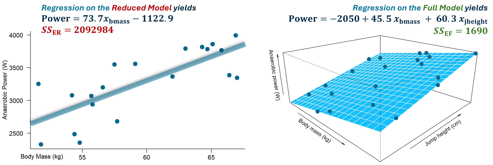
The Extra Sum of Squares
The contribution of the additional regressors can be quantified by the extra sum of squares:
\[ SS_{\text{ext}} = SS_{\text{ER}}-SS_{\text{EF}} \]
Equivalently, because the total sum of squares is the same for both models, the extra sum of squares can be written as the difference between the regression sums of squares:
\[ SS_{\text{ext}} = SS_{\text{RF}}-SS_{\text{RR}} \]
where \(SS_{\text{RF}}\) and \(SS_{\text{RR}}\) are the regression sums of squares for the full and reduced models, respectively.
Using matrix notation:
\[ SS_{\text{ext}}=\hat{\mathbf{B}}^T\mathbf{X}^T\mathbf{y} -\hat{\mathbf{B}}_R^T\mathbf{X}_R^T\mathbf{y} \]
where \(\hat{\mathbf{B}}\) and \(\mathbf{X}\) refer to the full model, while \(\hat{\mathbf{B}}_R\) and \(\mathbf{X}_R\) refer to the reduced model.
NoteMeaning of \(SS_{\text{ext}}\)
\(SS_{\text{ext}}\) measures the reduction in residual variability obtained by adding the regressors \(X_{q+1},\dots,X_p\) to the model.
If this reduction is large relative to the residual variability of the full model, the additional regressors are considered statistically useful.
The Extra Sum of Squares \(F\) Test
The extra sum of squares is converted into a mean square by dividing it by the number of additional regressors:
\[ MS_{\text{ext}} = \frac{SS_{\text{ext}}}{p-q} \]
The residual mean square of the full model is:
\[ MS_{\text{EF}} = \frac{SS_{\text{EF}}}{n-p-1} \]
The test statistic is therefore:
\[ F_{\text{ext}} = \frac{MS_{\text{ext}}}{MS_{\text{EF}}} = \frac{\left(SS_{\text{ER}}-SS_{\text{EF}}\right)/(p-q)}{SS_{\text{EF}}/(n-p-1)} \]
Under the null hypothesis,
\[ F_{\text{ext}} \sim F(p-q,n-p-1) \]
If \(H_0\) is false, the additional regressors explain systematic variability in the response variable. In this case, \(SS_{\text{ext}}\) is large and \(F_{\text{ext}}\) tends to be larger than expected under the null hypothesis.
Expanded ANOVA Table for Nested Models
The extra sum of squares test can be summarized in an expanded ANOVA table:
For the anaerobic power example, the comparison between the reduced model with body mass only and the full model with body mass and jump height yields (see Figure 15.11):
\[ SS_{\text{ext}}=2092984 - 1690= 2091294 \]
With \(p=2\), \(q=1\), and \(n-p-1=17\) degrees of freedom for the full-model residuals:
\[ F_{\text{ext}}=\frac{2091294/(2-1)}{1690/17}=21039 \]
The resulting \(F\) value is very large, indicating that jump height contributes substantially to the prediction of anaerobic power after body mass has already been included in the model.
Dependence on the Reduced Model
The extra sum of squares depends on which regressors are already included in the reduced model.
For example, when the reduced model includes only body mass, the extra sum of squares quantifies the contribution of adding jump height:
\[ SS_{\text{ext}} = SS_{\text{RF}}-SS_{\text{RR(body mass)}}. \]
When the reduced model includes only jump height, the extra sum of squares quantifies the contribution of adding body mass:
\[ SS_{\text{ext}} = SS_{\text{RF}}-SS_{\text{RR(jump height)}}. \]
Therefore, the contribution attributed to a regressor depends on which other regressors are already included in the model.
ImportantContribution depends on the model
In multiple regression, the apparent contribution of a predictor depends on the other predictors already included in the model.
This is one reason why model building becomes difficult when many potential explanatory variables are available.
Variable Selection: Examining Candidate Models
The second situation arises when several explanatory variables are available but there is no predefined subset to be tested. In this case, the goal is to identify a model that balances predictive performance and parsimony.
This involves a compromise between:
- selecting as many regressors as possible, which may improve prediction and reduce omitted-variable bias;
- selecting as few regressors as possible, which improves parsimony, reduces measurement costs, and helps control prediction variance.
Because the contribution of each regressor depends on the other regressors included in the model, all possible combinations of regressors may need to be considered. This becomes impractical as the number of candidate regressors increases.
If \(k\) candidate regressors are available, the number of possible models grows rapidly. For this reason, model selection procedures are commonly used to guide the choice of regressors.
Adjusted Coefficient of Determination
Different metrics have been proposed to guide model selection, including the residual mean square, Mallows’ \(C_p\), and the adjusted coefficient of determination.
Here, we focus on the adjusted coefficient of determination, denoted \(R^2_{\text{adj}}\):
\[ R^2_{\text{adj}} = 1 - (1-R^2) \frac{n-1}{n-p-1}. \tag{15.22}\]
The usual coefficient of determination, \(R^2\), never decreases when additional regressors are added to a model, even if those regressors contribute little useful information. The adjusted coefficient of determination penalizes the inclusion of additional regressors by accounting for the number of predictors in the model.
NoteWhy adjust \(R^2\)?
Adding regressors to a model always decreases the residual sum of squares and therefore never decreases \(R^2\).
\(R^2_{\text{adj}}\) corrects for this by penalizing unnecessary predictors. It may decrease when a newly added regressor does not improve the model enough to justify the additional complexity.
Suppose four potential explanatory variables are now available for predicting anaerobic power, according to the following table.
Each possible subset of these regressors defines a candidate model. For each candidate model, \(SS_E\), \(R^2\), and \(R^2_{\text{adj}}\) can be computed.
A Knee-Based Decision Rule
One practical way to select a model is based on identifying the point at which adding more regressors yields only a small improvement in model performance. This is sometimes called a knee-based decision.
The four-step procedure described below and illustrated in Figure 15.12 can be used:
- Plot \(R^2_{\text{adj}}\) against the number of regressors \(p\) for each possible model.
- For each value of \(p\), identify the model with the maximum \(R^2_{\text{adj}}\).
- Sketch the curve based on these maximum values.
- Select the model at the point where the curve shows the most discernible change in slope, the knee.
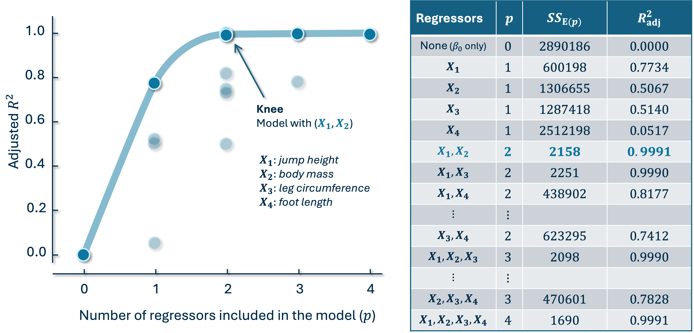
In the anaerobic power example, the largest improvement in \(R^2_{\text{adj}}\) occurs when moving from one to two regressors. Adding further variables produces little additional improvement. The knee therefore occurs at \(p=2\), corresponding to the model including:
\[ X_1: \text{jump height}, \qquad X_2: \text{body mass}. \]
This agrees with the practical interpretation of the model—jump height and body mass are the most informative predictors of anaerobic power among the candidate variables considered.
ImportantModel selection should not be automated
Model selection criteria support decision-making, but they do not replace scientific reasoning.
The final model should be selected based on statistical evidence, practical interpretability, measurement feasibility, and prior knowledge about the phenomenon under study.
15.6 Important Issues in Regression Analysis
Regression models are powerful tools for prediction and for explaining relationships between variables. However, a regression model may provide misleading results if it is used outside the conditions in which it was estimated or if some observations and predictors have undesirable properties.
This final section discusses three important issues that should always be considered when interpreting regression results:
- extrapolation
- influential observations
- multicollinearity
These issues are not minor technical details. They may strongly affect predictions, coefficient estimates, and the interpretation of the model.
Extrapolation
A regression model should be used primarily within the range of values for which it was estimated. Extrapolation occurs when the model is used to predict the response variable for observations falling outside the range of the explanatory variable values used to fit the model.
For example, suppose a linear regression model was estimated to predict plasma cholesterol from age, using observations from individuals between approximately 20 and 60 years old. Predicting cholesterol for a 67-year-old individual would require extending the fitted regression line beyond the observed age range.
This may appear harmless when the fitted line is available. However, there is no guarantee that the same linear relationship remains valid outside the observed range.
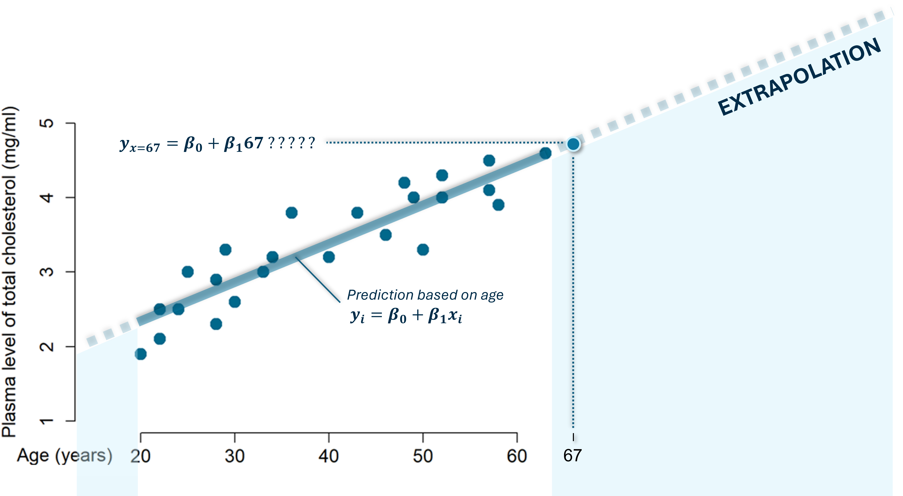
ImportantExtrapolation is discouraged
Regression models describe relationships observed within the data used to fit the model. Predictions made outside the observed range of the explanatory variables should be interpreted with caution.
The farther a new observation is from the range of the original data, the less reliable the prediction becomes.
Influential Observations
An outlier is an observation that deviates substantially from the pattern observed in the data. In regression analysis, outliers may occur with respect to:
- the response variable,
- the explanatory variable,
- or both.
Not every outlier has the same impact on the fitted regression model. Some observations may deviate from the general distribution of the response variable but have little effect on the fitted line. Others may strongly affect the estimated coefficients and therefore the interpretation of the model.
The three cases of influential observations are detailed below.
Outliers with Respect to the Response Variable
An observation may be unusual because its response value is much higher or lower than expected for the corresponding value of the explanatory variable.
For the cholesterol prediction example above (Figure 15.13), suppose one subject presented a cholesterol value much higher than that of individuals with similar age. Such an observation is an outlier with respect to the response variable.
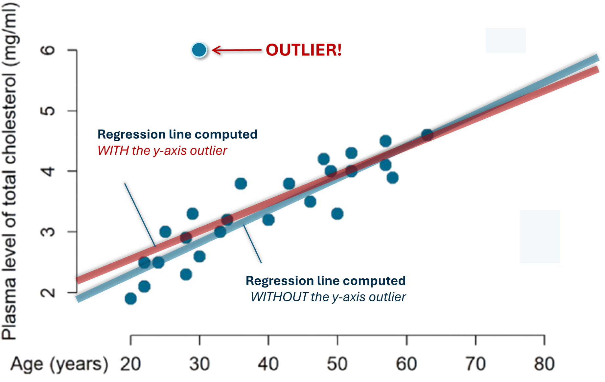
This type of outlier may increase residual variability, but it does not necessarily change the slope of the regression line substantially.
Outliers with Respect to Both Explanatory and Response Variables
An observation may also be unusual with respect to both the explanatory and response variables. In this case, the observation is located far from the main cloud of points in both directions.
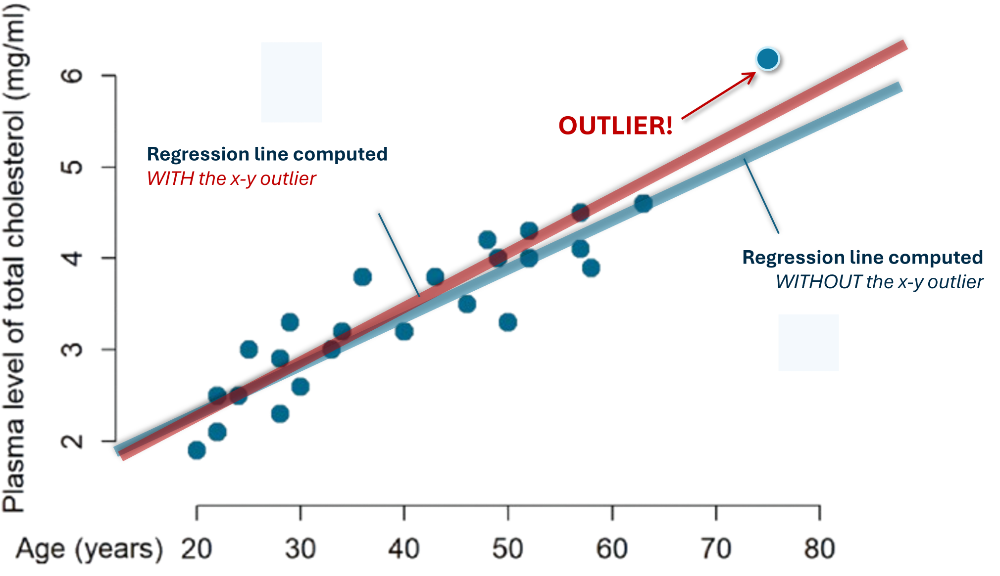
Such observations may have a greater effect on the fitted regression line because they occur in a region of the explanatory variable where there are few or no other observations.
Outliers with Respect to the Explanatory Variable
An observation may deviate mainly with respect to the explanatory variable. These observations are sometimes called high-leverage observations, because their position along the \(x\) axis may give them a large influence on the fitted regression line.
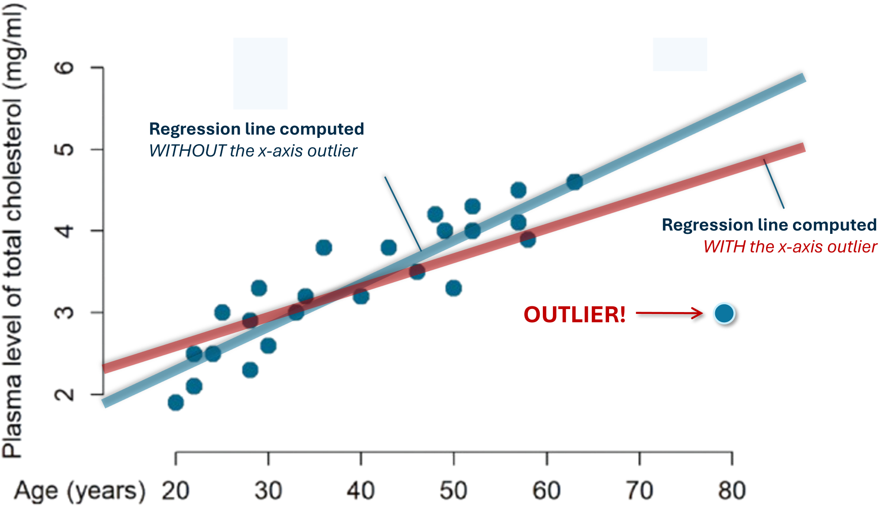
A high-leverage observation is not necessarily problematic (see case 2).
Only if it does not follow the same linear pattern as the remaining data, it may substantially change the estimated slope and intercept.
NoteOutliers and influential observations
An outlier is not necessarily an influential observation. An observation is influential when removing it would substantially change the fitted regression model.
Influence therefore depends not only on how unusual the observation is, but also on how much it changes the estimated model.
Cook’s Distance
Cook’s distance is a diagnostic measure used to assess the influence of each observation on the fitted regression model.
The basic idea is to compare the predictions obtained from:
- the regression model fitted with all observations;
- the regression model fitted after removing the \(j\)-th observation.
If removing the \(j\)-th observation produces large changes in the predicted values, then the observation is influential.
Let \(\hat{y}_i\) denote the predicted value for observation \(i\) obtained from the model fitted with all observations. Let \(\hat{y}_{i(j)}\) denote the predicted value for observation \(i\) obtained from the model fitted after removing observation \(j\). An example of the two models is illustrated for the cholesterol simulated data in the left plot of Figure 15.14.
Cook’s distance for observation \(j\) can be written as:
\[ D_j = \frac{1}{(p+1)s^2} \sum_{i=1}^{n} \left(\hat{y}_i-\hat{y}_{i(j)}\right)^2 \]
where:
- \(p\) is the number of explanatory variables,
- \(p+1\) is the number of coefficients including the intercept,
- \(s^2\) is the residual mean square (\(MS_\text{E}\) in Table 15.3).
Large values of \(D_j\) indicate that observation \(j\) has a strong influence on the fitted regression model.
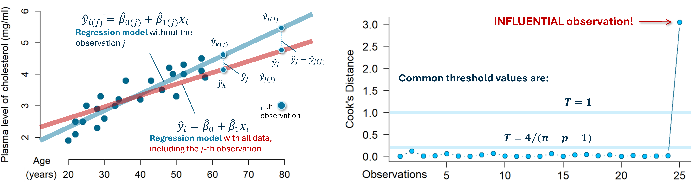
Using Cook’s Distance in Practice
Cook’s distance can be computed for each observation in the data set. The values are then plotted against the observation number to identify potentially influential observations. An example of the Cook’s distance computed for all observations in the cholesterol example is shown in the right plot of Figure 15.14.
Common threshold values used to flag influential observations are:
\[ D_j > 1 \]
or
\[ D_j > \frac{4}{n-p-1}. \]
These thresholds should not be interpreted as absolute rules. Instead, they are practical guidelines for identifying observations that deserve further inspection.
ImportantWhat to do with influential observations?
Influential observations should not be removed automatically.
They should first be inspected carefully. They may correspond to measurement errors, data-entry errors, unusual but valid biological observations, or subjects belonging to a different population.
The decision to remove an observation must always be scientifically justified.
Multicollinearity
Multiple regression models include two or more explanatory variables. Ideally, each explanatory variable should contribute unique information about the response variable.
Multicollinearity occurs when two or more explanatory variables are strongly correlated. In this case, the model has difficulty separating the individual contribution of each predictor.
For example, in a model predicting anaerobic power (see Section 15.4.1), body mass and body mass index may be strongly correlated.
Including both variables in the same model may create instability in the estimated regression coefficients.
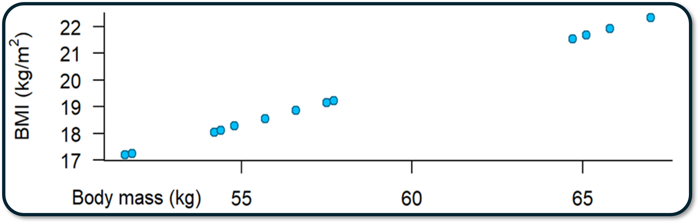
Multicollinearity is related to the matrix expression used to estimate regression coefficients, presented in Equation 15.20.
If the columns of \(\mathbf X\) contain redundant information, the matrix \(\mathbf X^T\mathbf X\) may become singular or nearly singular.
If the matrix is singular, the model coefficients cannot be estimated. If the matrix is nearly singular, the coefficients can still be estimated, but their uncertainty may become very large.
Consequences of Multicollinearity
Multicollinearity does not necessarily reduce the predictive ability of the model. However, it may severely affect the interpretation of individual coefficients.
When two explanatory variables are strongly correlated, small changes in the data may lead to large changes in the estimated coefficients. Standard errors become inflated, confidence intervals become wider, and the statistical significance of individual predictors becomes harder to assess.
To illustrate this issue, let us consider the anaerobic power prediction example. Figure 15.15 shows values for the estimated coefficients, their standard error, \(t\)-values and the associated probabilities. Two models were simulated, one including the three predictors (\(X_1\): jump height, \(X_2\): body mass, \(X_3\): BMI) and the other including only jump height and body mass. Notice how large errors become in the presence of collinearity.
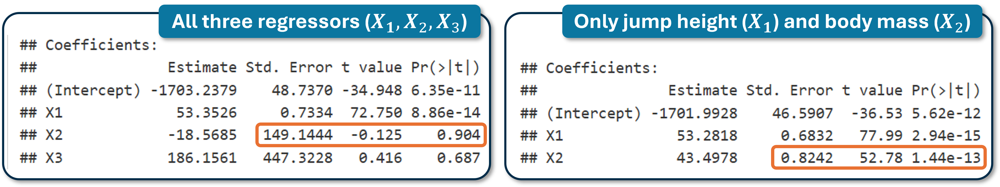
ImportantMulticollinearity and coefficient interpretation
Multicollinearity does not necessarily bias the estimated coefficients.
Its main effect is to inflate their variances, making coefficient estimates unstable and difficult to interpret.
Variance Inflation Factor (VIF)
One important issue in multiple regression is multicollinearity: the existence of correlation between explanatory variables.
As discussed in the previous section, the variance of the estimated coefficient \(\hat{\beta}_k\) is determined from the covariance matrix of the estimates (see Equation 15.21). To simplify notation, let us define:
\[ \mathbf{C} = \mathbf{X}^T\mathbf{X} \]
where \(\mathbf{X}\) is the design matrix.
The variance of the estimated coefficient \(\hat{\beta}_k\) is therefore:
\[ \text{Var}(\hat{\beta}_k) = \sigma^2 \left(\mathbf{C}^{-1}\right)_{kk} \]
Now suppose that the explanatory variables were mutually orthogonal, that is, completely uncorrelated. In this case, the matrix \(\mathbf{C}\) would be diagonal and the variance of the coefficient estimate would reduce to:
\[ \text{Var}^{\perp}(\hat{\beta}_k) = \frac{\sigma^2}{C_{kk}} \]
The difference between these two variances is entirely due to the correlation between explanatory variables.
The Variance Inflation Factor (VIF) is defined as the ratio between the actual variance of the coefficient estimate and the variance that would be obtained if the regressors were orthogonal:
\[ \text{VIF}_k = \frac{\text{Var}(\hat{\beta}_k) }{\text{Var}^{\perp}(\hat{\beta}_k)} \]
Substituting the expressions above yields:
\[ \text{VIF}_k = C_{kk}\left(\mathbf{C}^{-1}\right)_{kk} = \frac{1}{1-R_k^2} \tag{15.23}\]
where \(R_k^2\) is the coefficient of determination obtained by regressing the explanatory variable \(X_k\) against all remaining explanatory variables.
NoteCentering the design matrix
The identity in Equation 15.23 holds when the columns of the design matrix associated with the explanatory variables have been centered (demeaned). In this case, the intercept becomes orthogonal to all predictors, which simplifies the derivation of the Variance Inflation Factor.
If VIF is computed from the coefficient of determination \(R_k^2\) obtained by regressing \(X_k\) on the remaining explanatory variables, centering is not required.
Therefore, VIF quantifies how much the variance of \(\hat{\beta}_k\) is inflated because of the correlation between \(X_k\) and the remaining predictors.
If \(X_k\) is completely independent of the remaining explanatory variables:
\[ R_k^2 = 0 \qquad \Rightarrow \qquad \text{VIF}_k = 1. \]
In this case, no variance inflation occurs.
Conversely, if \(X_k\) can be accurately predicted from the remaining explanatory variables, then \(R_k^2\) approaches one and the variance inflation factor increases rapidly.
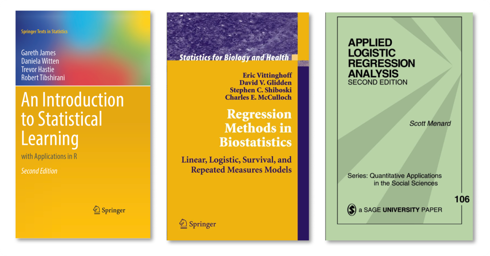
Many textbooks suggest that values of \(\text{VIF} > 5\) may indicate problematic collinearity, although this threshold should be interpreted as a guideline rather than a strict rule.
Exercise: VIF in anaerobic power prediction
The figure below reports the Variance Inflation Factor (VIF) computed for three explanatory variables in the full model (\(X_1\), \(X_2\), and \(X_3\)) and for two explanatory variables in the reduced model (\(X_1\) and \(X_2\)).
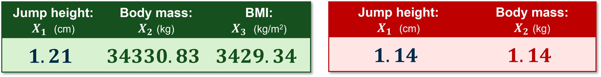
What is the most appropriate conclusion?
The full model yields extremely large VIF values for body mass (\(X_2\)) and BMI (\(X_3\)), indicating that these variables contain largely redundant information.
The reduced model, obtained after removing BMI, yields VIF values close to 1 for both remaining predictors. Therefore, the most appropriate conclusion is that body mass and BMI exhibit severe multicollinearity and one of them should be excluded from the model.
NoteDealing with multicollinearity
When multicollinearity is detected, possible strategies include removing one of the correlated predictors, combining related predictors into a single measure, or selecting the predictor that is more meaningful for the scientific question.
The decision should not be based only on numerical criteria, but also on the biological and methodological interpretation of the variables.
Final Remarks
Regression analysis should never rely only on numerical output. Coefficients, \(p\)-values, confidence intervals, prediction intervals, Cook’s distance, and VIF are all useful tools. However, they do not replace careful inspection of the data.
Scatterplots, residual plots, boxplots, and diagnostic plots should always be examined before drawing conclusions from a regression model.
ImportantAlways inspect the data
Something that can never be stressed enough is that data should always be inspected before interpreting a regression model.
Graphical inspection often reveals problems that numerical summaries alone may miss.